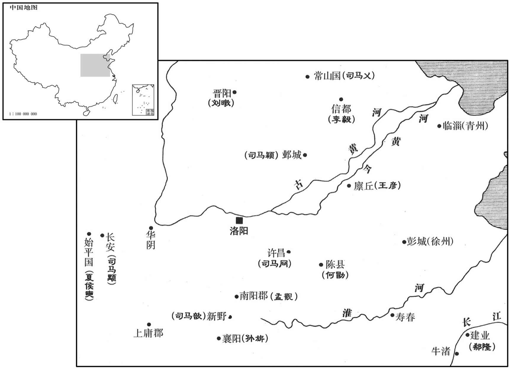
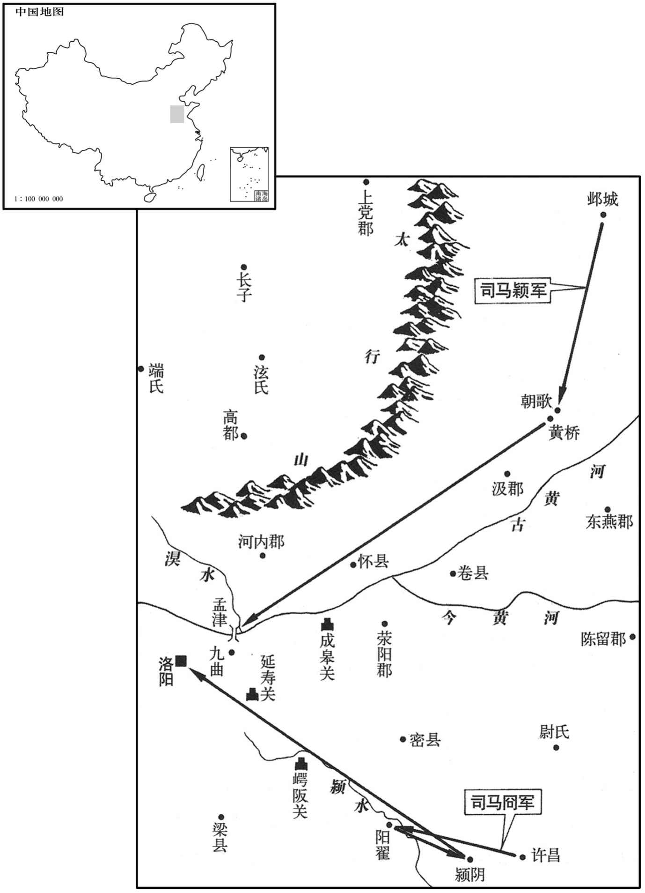
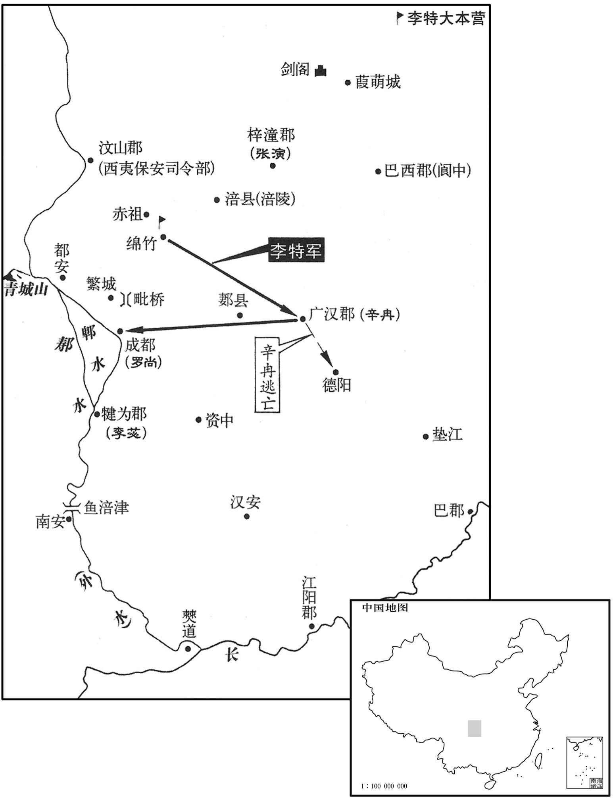
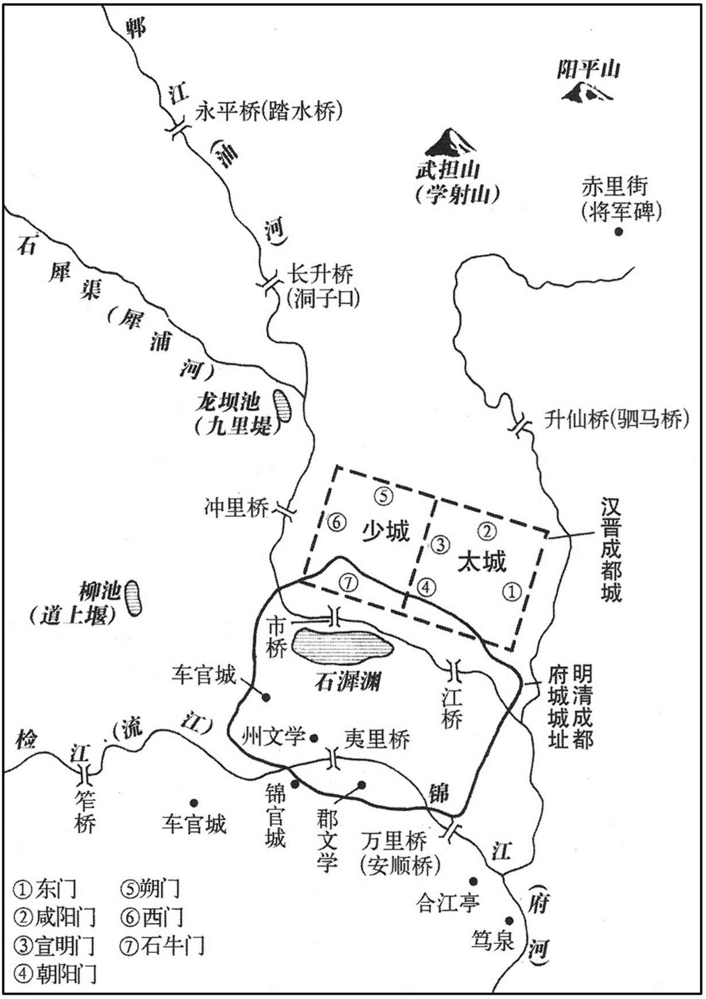
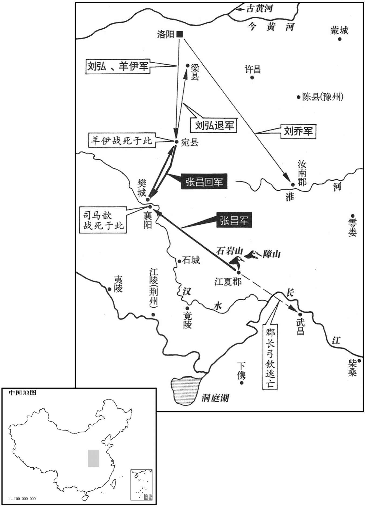
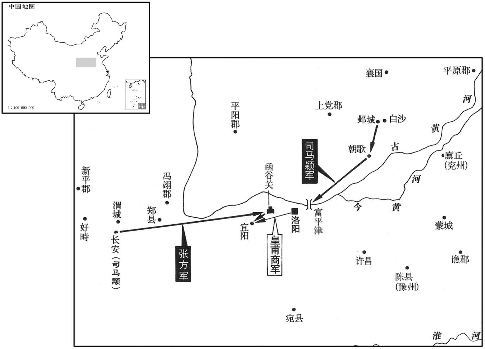
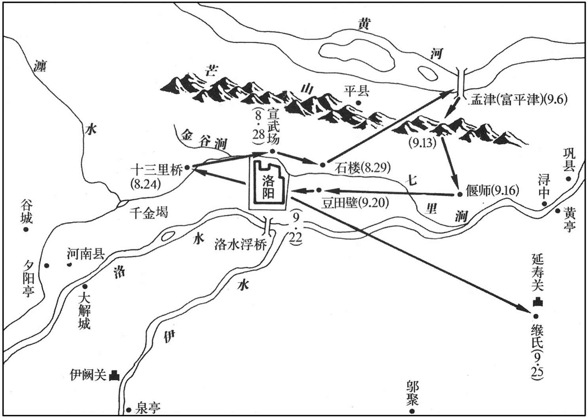
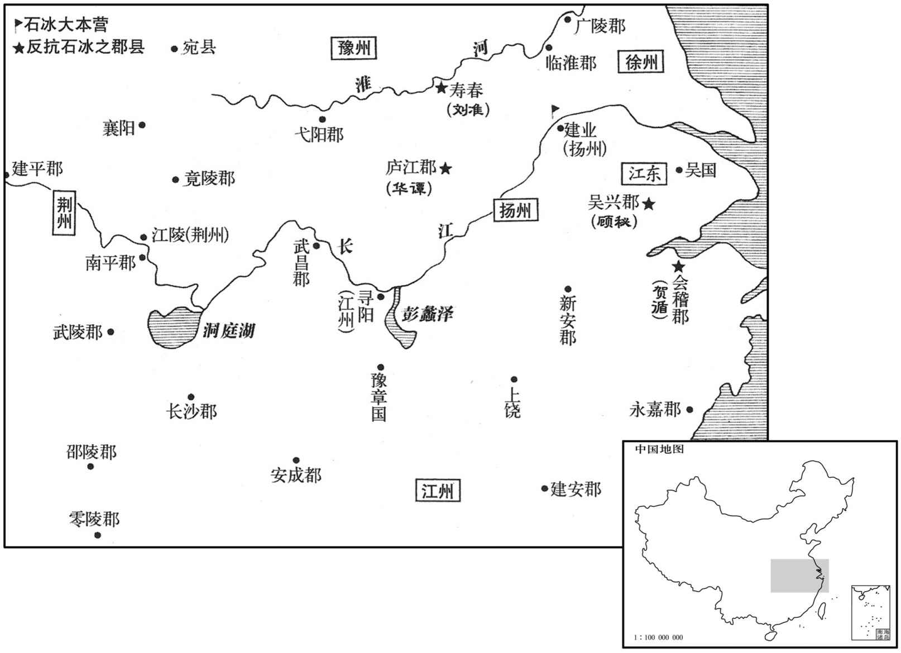

卷次与人物目录 / 卷84
资治通鉴 · 卷第八十四【晋纪六】
公元301年至公元303年 · 原文、白话与胡三省注
本页按胡注本编排保存全卷内容。白话采用本站所据译本，未可靠对应的内容另列说明；事件标题用于定位，并非原书文字。
本卷共65段原文，61段有译文对应，4段缺译或待核对。
卷第八十四【晋纪六】起重光作噩（辛酉），尽玄黓茂（壬戍），凡二年。
卷首原文与注释
孝惠皇帝中之上
公元301年 · 晋孝惠皇帝永宁元年
永宁元年〔（辛酉、三○一）此犹是永康二年；正月乙丑，赵王伦改元建始；四月，帝反正，始改元永宁。〕
上传原文的注释括号有异常，字符原样保留；无法可靠划分的段落默认全文显示。
本年事件索引（现代整理）
- 张轨出任凉州刺史，平定州境盗贼与鲜卑
- 赵伦假托宣帝神语篡位，惠帝被迁往金墉城
- 赵伦尊惠帝为太上皇，封诸子并任孙秀掌权
- 孙旗劝阻诸子依附孙秀，诸子不听
- 孙秀擅改诏令，诱使赵伦诛杀张林并防备诸王
- 赵廞听信谗言杀害李庠，李特、李流怨而归营
- 许弇与赵廞部属互杀，赵廞势力渐衰
- 李特夜袭赵廞军，赵廞败亡，李特攻入成都
- 罗尚受命入蜀，拒绝乘会诛杀李特
- 罗尚抵达成都，汶山羌杀死讨伐他们的王敦
- 齐王冏起兵讨赵伦，并檄告诸王州郡
- 成都王颖听从卢志建议起兵，响应齐王冏
- 常山王与刘暾率军响应成都王颖
- 新野王歆听从孙询建议，决定响应讨伦之师
- 河间王颙反复观望，先杀夏侯奭后转而附从诸王
- 郗隆迟疑不决，扬州属官主张出兵响应齐王冏
- 孟观占卜赵伦不会败，留守洛阳助伦
- 赵伦分兵拒守各关，孙秀率宿卫军抵御成都王颖
- 日食，五星经天运行异常
- 张泓屡胜齐王冏，赵伦误信谣言而召回援军
- 成都王颖先败后胜，赵伦军因孙会等争功失和
- 王舆发动宫变，杀孙秀等人，赵伦兵败被俘
- 晋大赦改元永宁，赵伦及其诸子被赐死
- 晋立襄阳王司马尚为皇太孙
- 齐王冏率数十万军入洛阳
- 晋大赦
- 晋复封吴王司马晏
- 晋以齐王冏为大司马、加九锡，成都王颖等亦受重任
- 齐王冏宽宥刘琨、刘舆，任用王戎、王衍等
- 新野王歆劝齐王冏留成都王颖辅政或削其兵权
- 齐王冏征辟刘殷、陆机、张翰、顾荣等人
- 成都王颖到邺，赈济战后百姓并厚葬黄桥阵亡将士
- 齐王冏疑陆机替赵伦拟禅让诏，陆机获释后出任平原内史
- 晋复封常山王乂为长沙王
- 东莱王蕤密谋废齐王冏，事败后被废并遭杀害
- 晋大赦
- 东武公澹因不孝徙居辽东，东安王繇复爵任职
- 朝廷催遣入蜀流民归乡，辛冉扣留朝命激起怨愤
- 罗尚限令流民七月离蜀，拒绝宽限至冬
- 李特收容流民，追随者增至二万余人
- 阎式警告罗尚，催迫流民将激变生祸
- 辛冉、李苾夜袭李特营，反被李特伏击大败
- 六郡流民推举李特为主，李特攻取广汉进逼成都
- 李特任用亲族将领，与蜀民约法并赈济百姓
- 颍昌王何邵去世
- 齐王冏封其子为乐安、济阳、淮南王
春，正月，以散骑常侍安定张轨为凉州刺史。〔散，悉亶翻。骑，奇寄翻。〕轨以时方多难，阴有保据河西之志，故求为凉州。时州境盗贼纵横，〔难，乃旦翻。纵，子容翻。〕鲜卑为寇；轨至，以宋配、泛瑗为谋主，〔杨正衡曰：泛，音凡，姓也。瑗，于眷翻。〕悉讨破之，威着西土。〔张氏保据凉土始此。呜呼！世乱则人思自全，然求全而不能自全者亦多矣。窦融、张轨之求出河西，此求全而得全者也。谢晦、袁顗之求镇荆、襄，此求全而不能自全者也。盖窦融、张轨，始终一心以奉汉、晋，此固宜永终福禄、诒及子孙者也。谢晦、袁顗，志在据地险以全身，其用心非矣，天所不与也。然刘焉求牧益州，袁绍志图冀部，石敬瑭心欲河东，皆以之潜规非望；至其成败久速，则有非智虑所及者。
本段缺少可靠对应白话，原文完整保留；未使用生成译文。
相国伦与孙秀使牙门赵奉诈传宣帝神语云：「伦宜早入西宫。」〔司马懿，追谥宣皇帝。时伦以东宫为相国府，谓禁中为西宫。〕散骑常侍义阳王威，望之孙也，素谄事伦，伦以威兼侍中，使威逼夺帝玺绶，作禅诏，又使尚书令满奋持节、奉玺绶〔玺，斯氏翻。绶，音受。〕禅位于伦。左卫将军王舆、前军将军司马雅等帅甲士入殿，〔帅，读曰率。〕晓谕三部司马，示以威赏，无敢违者。张林等屯守诸门。〔屯守宫城诸门也。〕乙丑，伦备法驾入宫，即帝位。〔考异曰：三十国春秋云：「伦将篡位，义阳王威执诏示嵇绍曰：『圣上法尧、舜之举，卿其然乎﹖』绍厉声曰：『有死而已，终不有二！』威怒，拔剑而出。及惠帝迁于金墉城，唯绍固志不从，宜于金墉，绝不通伦，时人皆为之惧。」晋书忠义传云：「伦篡位，绍为侍中，惠帝复祚，遂居其职。」一说不同，今皆不取。「复祚」之「祚」，当作「阼」。〕赦天下，改元建始。帝自华林西门出居金墉城，〔华林西门，华林园西门也。〕伦使张衡将兵守之。〔将，即亮翻。〕
相国司马伦和孙秀让牙门赵奉假称宣帝有神语，散布说：“司马伦应当尽快入西宫即帝位。”散骑常侍义阳王司马威，是司马望的孙子，一直对司马伦谄谀奉承，司马伦就让司马威兼任侍中，派他逼迫惠帝交出皇帝玺印与缓带，作禅让帝位的诏书，又派尚书令满奋持符节取来玺印与缓带，奉交给司马伦，表示惠帝已禅位给司马伦。左卫将军王舆、前军将军司马雅带领全副武装的兵士进入宫殿，通告三部司马，向他们宣示威势与封赏，没有谁胆敢违抗。张林等人在各宫门前驻扎防守。乙丑（初九），司马伦乘皇帝的专车进入皇宫，即帝位。大郝天下，改年号为建始，惠帝从华林园西门出宫到金墉城居住，司马伦派张衡带兵看守惠帝。
丙寅，尊帝为太上皇，改金墉曰永昌宫，废皇太孙为濮阳王。〔濮，博木翻。〕立世子荂为皇太子，〔荂，枯花翻；杨正衡音孚。〕封子馥为京兆王，虔为广平王，诩为霸城王，皆侍中将兵。以梁王肜为宰衡，〔肜，余中翻。〕何劭为太宰，孙秀为侍中、中书监、票骑将军、仪同三司，〔票，匹妙翻。〕义阳王威为中书令，张林为卫将军，其余党与，皆为卿、将，列卿及诸中郎将也。将，即亮翻。〕超阶越次，不可胜纪；〔胜，音升。〕下至奴率，亦加爵位。每朝会，貂蝉盈座，〔武冠，一曰武弁，诸武宫冠之。侍中、中常侍加黄金珰，附蝉为文，貂尾为饰，谓之「赵惠文冠」。胡广说曰：赵武灵王效胡服，以金珰饰首，前插貂尾，为贵职；秦灭赵，以其冠赐近臣。应劭汉官曰：说者以金取坚刚，百炼不耗，蝉居高饮洁，口在腋下；貂内劲捍而外温润，此因物生义也。徐广曰：赵武灵王胡服有此，秦、汉即而用之。说者蝉取其清高饮露而不食，貂紫蔚采润而毛采不彰，故于义亦取。胡广又曰：意谓北方寒凉，本以貂皮暖额，附施于冠，因遂变成首饰。沈约曰：貂蝉之说，因物生义，非其实也。其实赵武灵王变胡服，秦灭赵，以其君冠赐侍臣，故秦、汉以来，侍臣有貂蝉也。朝，直遥翻。〕时人为之谚曰：「貂不足，狗尾续。」〔史记曰：狐裘虽敝，不可补以黄狗之皮，亦此意。是岁，天下所举贤良、秀才、孝廉皆不试；〔旧制，贤良、秀、孝皆试而后补官。〕郡国计吏及太学生年十六以上皆署吏；守令赦日在职者皆封侯；〔守，式又翻。〕郡纲纪并为孝廉，县纲纪并为廉吏。〔郡纲纪，功曹之属；县纲纪，主簿、录事史之属。廉吏，亦选举之一科。史言伦、秀欲以滥恩收众心。〕府库之储，不足以供赐与。应侯者多，铸印不给，或以白板封之。
丙寅（初十），将惠帝尊为太上皇，把金墉城改名为永昌宫，把皇太孙废黜为濮阳王。立司马伦长子司马为皇太子，儿子司马馥封为京兆王，司马虔封为广平王，司马翊为霸城王，都为侍中并带兵。任命梁王司马肜为宰衡，何劭为太宰，孙秀任侍中，中书监、票骑将军、仪同三司。义阳王司马威为中书令，张林为卫将军，其余党羽都任用为列卿以及各种名目的将军，任意越级提拔的人，多的不可胜数。下到奴仆士卒，也都封官加爵，每当朝会时，戴插貂尾、蝉羽等高官饰物的人充斥席位。不时人对这种滥封官爵的情况编谣谚说：“貂不足，狗尾续。”这一年，全国所荐举的贤良、秀才，孝廉等各名目的侯选官员都没有经过考试，各郡和封国掌管簿计的官员与十六岁以上的太学生都成为朝廷正式署官，全国大赦这一天在职的郡守县令都封了侯，郡属小官吏全都荐举为孝廉，县属小官吏全都荐举为廉吏。国家府、库的储备，都不够用来分发赏赐。封侯的人众多，来不及铸印，有时就用无字光板代替。
初，平南将军孙旗之子弼、弟子髦、辅、琰皆附会孙秀，与之合族，旬月间致位通显。及伦称帝，四子皆为将军，封郡侯，以旗为车骑将军、开府。旗以弼等受伦官爵过差，必为家祸，遣幼子回责之，弼等不从，旗不能制，恸哭而已。〔据晋书，孙旗四子，并以吏才称于当世。附丽非人，至于灭族，择木之难也。然孙旗先与孙秀亲善，故诸子从而附会之。择交之不审，何以诏其子哉！虽恸哭，无益也。孙族之赤，旗实为之。
本段缺少可靠对应白话，原文完整保留；未使用生成译文。
孙秀专执朝政，伦所出诏令，秀辄改更与夺，〔朝，直遥翻。更，工衡翻。〕自书青纸为诏，或朝行夕改，百官转易如流。张林素与秀不相能，且怨不得开府，潜与太子荂笺，言：「秀专权不合众心，而功臣皆小人，挠乱朝廷，〔挠，火高翻，又奴巧翻。〕可悉诛之。」荂以书白伦，伦以示秀。秀劝伦收林，杀之，夷其三族。秀以齐王冏、成都王颖、河间王颙，各拥强兵，据方面，恶之，〔冏镇许昌，颖镇邺，颙镇关中。恶，乌路翻。颙，鱼容翻。〕乃尽用其亲党为三王参佐，加冏镇东大将军、颖征北大将军，皆开府仪同三司，以宠安之。
孙秀专擅把持朝政，司马伦所下的诏令，孙秀随意改动增删，甚至自己写在青纸上作诏书。有时朝令夕改，百官像流水一样换来换去，张林一直与孙秀不和，加之怨恨没有得到开建府署的资格。暗地里给太子司马一封密信，说：“孙秀专权不能服众，而功臣都是小人，扰乱了朝廷，应当把他们全部诛杀。”司马将这封信告诉了司马伦，司马伦又把信交给孙秀看。孙秀就劝说司
马伦拘捕了张林，把他杀了，并夷灭三族。孙秀因为齐王司马、成都王司马颖，河间王司马，各自拥有强大的军队，独据一方，而认为他们很危险，便把这三个亲王的僚属全部任用自己的亲信党羽充当，又加封司马为镇东大将军，司马颖为征北大将军、开府仪同三司，来优宠安抚他们。
李庠晓勇得众心，赵廞浸忌之而未言。〔骁，坚尧翻。廞，许今翻。〕长史蜀郡杜淑、张粲说廞曰：「将军起兵始尔，而据遣李庠握强兵于外。〔谓廞使庠招合壮勇以断北道也。说，输芮翻。〕非我族类，其心必异，此倒戈授人也，宜早图之。」会庠劝廞称尊号，淑、粲因白廞以庠大逆不道，引斩之，并其子侄十余人。〔考异曰：载记曰：「及其子侄宗族三十余人。」今从华阳国志。又国志，庠死在去年冬，晋春秋在今年春。今从之。〕时李特、李流皆将兵在外，廞遣人慰抚之曰：「庠非所宜言，罪应死。兄弟罪不相及。」复以特、流为督将。〔将，即亮翻。〕特、流怨廞，引兵归鼦竹。
李庠骁勇又很得人心，赵逐渐忌恨他，但又没有说。长史蜀郡人杜淑、张粲劝说赵道：“将军刚刚起兵、就仓促派李庠在外掌握重兵。他不是我们的族类，一定不会和我们一条心，这是倒转长矛交给别人让他向我们攻击，应当尽快设法对付他。”正碰上李庠劝说赵称帝，杜淑、张粲告诉赵这是李庠大逆不道，便把李庠与他的儿子侄子十余人一齐杀了。当时李特、李流都在外带兵，赵派人去安抚告慰他们说：“李庠说了不应该说的话，应判死罪。与你们兄弟不相干。”又任命李特、李流为督将。李特、李流怨恨赵，便带领兵马回归绵竹。
廞牙门将涪陵许弇求为巴东监军，〔涪陵县，汉属巴郡，蜀分为涪陵郡。涪，音浮。监，音工衔翻。〕杜淑、张粲固执不许，弇怒，手杀淑、粲于廞合下，淑、粲左右复杀弇。〔复，扶又翻。〕三人，皆廞之腹心也，廞由是遂衰。〔腹心既死，廞无所倚，故其势衰。〕
赵的牙门将涪陵人许请求担任巴东监军，杜淑、张粲坚持不答应，许大怒，亲手在赵门前杀了杜淑、张粲，杜淑、张粲的左右随从又杀了许。这三人都是赵的心腹亲信，赵因此而衰败。
廞遣长史犍为费远、〔犍，居言翻。费，扶沸翻。〕蜀郡太守李苾、督护常俊督万余人断北道，屯鼦竹之石亭。〔苾，毗必翻。鼦竹县，汉属广汉郡，晋属新都郡，唐属汉州。断，丁管翻。〕李特密收兵得七千余人，夜袭远等军，烧之，死者十八九，遂进攻成都。费远、李苾及军张：「军」下脱「谘」字。】〕祭酒张微，夜斩关走，文武尽散。廞独与妻〔【章：甲十一行本「妻」下有「子」字；乙十一行本同；孔本同；张校同。】〕乘小船走，至广都，为从者所杀。〔从，才用翻。〕特入成都，纵兵大掠，遣使诣洛阳，陈廞罪状。
赵派长史犍为人费远，蜀郡太守李，督护常俊率领一万余人截断北来的道路，驻扎在绵竹的石亭。李特秘密聚集了七千多兵卒，夜袭费远等人所率 的军队，用火烧他们，被烧死的十有八九，于是进攻成都。费远、李以及军祭酒张微，趁夜夺路而逃，文武官员全部跑散。赵一个人与妻子乘小船逃走，到广都时，被随从杀死。李特进入成都，纵兵大肆抢掠，派遣使者到洛阳，陈述赵的罪状。
初，梁州刺史罗尚，闻赵廞反，表：「廞非雄才，蜀人不附，败亡可计日而待。」诏拜尚平西将军、益州刺史，督牙门将王敦、〔此别一王敦。〕蜀郡太守徐俭、广汉太守辛冉等七千余人入蜀。特等闻尚来，甚惧，使其弟骧于道奉迎，并献珍玩，尚悦，以骧为骑督。骧，斯将翻。说，输芮翻。〕「特等专为盗贼，宜因会斩之；不然，必为后患。」尚不从。冉与特有旧，谓特曰：「故人相逢，不吉当凶矣。」特深自猜惧。
当初，梁州刺史罗尚，听说赵谋反，曾上表说：“赵不是雄才大略的人，蜀地人们不会归附他，他的失败灭亡指日可待。”朝廷任命罗尚为平西将军，益州刺史，督牙门将王敦、蜀郡太守徐俭、广汉太守辛冉等率七千余人进入蜀地。李特等人听说罗尚到来，非常惧怕，派弟弟李骧在路上迎接，并献上珍宝古玩。罗尚非常高兴、任用李骧为骑督。李特、李流又在绵竹用牛、酒犒劳罗尚。王敦、辛冉劝罗尚说：“李特等人专会作盗贼，应当趁机杀了，否则一定是后患。”罗尚没有听从。辛冉与李特以前虽有过交往，辛冉对李特说：“故人相逢，不是吉祥便是凶险。”李特深深猜疑害怕。
三月，尚至成都。汶山羌反，尚遣王敦讨之，为羌所杀。〔汶，音岷。考异曰：帝纪在八月，疑是洛阳始知。今从华阳国志。〕
三月，罗尚到成都。汶山羌人造反，罗尚派王敦征讨他们，被羌人杀死。
齐王冏谋讨赵王伦，未发，会离狐王盛、〔离狐县，前汉属东郡，后汉、晋属济阴郡，唐天宝元年，改为南华县，属郓州。〕颍川处穆〔晋书作「王处穆」。〕〔【章：孔本「处」上正有「王」字；张校同。〕聚众于浊泽，〔浊泽在颍川长社县。〕百姓从之，日以万数。伦以其将管袭为齐王军司，讨盛、穆，斩之。冏因收袭，杀之，〔考异曰：齐王冏传曰：「冏潜与盛、穆谋起兵诛伦，未发，恐事泄，乃与袭杀穆，送首于伦，以安其意。」今从三十国春秋。〕与豫州刺史何勖、龙骧将军董艾等起兵，遣使告成都王颖、河间王颙、常山王父及南中郎将新野公歆，〔晋志曰：四中郎将，并后汉置；武帝以来，四中郎将或领刺史，或持节为之。歆，扶风王骏之子也。〕移檄征、镇、州、郡、县、国，〔征、镇，四征、四镇，居方面者。〕称：「逆臣孙秀，迷误赵王，当共诛讨。有不从命者，诛及三族。」
齐王司马商议征讨赵王司马伦，还没有动兵，碰上离孤县人王盛、颍川人王处穆在浊泽聚众，百姓响应跟随他们，一天就有万人。司马伦派他的属将管袭任齐王的军司，征讨王盛、处穆，杀死他们。司马则趁机拘捕并杀死了管袭，与豫州刺史何勖、龙骧将军董艾等人起兵，派遣使者通告成都王司马颖、河间王司马、常山王司马以及南中郎将新野公司马歆，向征、镇、州、郡、县、国等各地行政部门传布檄文，说：“叛逆之臣孙秀，迷惑妨害赵王，应该共同讨伐。有不听从命令的，诛灭三族。”
使者至邺，成都王颖召邺令卢志谋之。志曰：「赵王篡逆，人神共愤，殿下收英俊以从人望，杖大顺以讨之，百姓必不召自至，攘臂争进，蔑不克矣。」〔蔑，无也。〕颖从之，以志为咨议参军，〔咨议参军，晋公府皆置之，盖取谘诣谋议军事也，其位在诸参军之上。〕仍补左长史。志，毓之孙也。〔卢毓见七十三卷魏明帝景初元年。〕颖以兖州刺史王彦、冀州刺史李毅、督护赵骧、石超等为前锋，远近响应；至朝歌，〔朝歌县，前汉属河内郡，晋分属汲郡；隋大业二年，改朝歌县为卫县，属卫州；有纣所都朝歌城，在县西。〕众二十余万。超，苞之孙也。〔石苞事文帝、武帝，功参佐命。〕
使者到邺县，成都王司马颖召集邺县令卢志商议计划，卢志说：“赵王篡权叛逆，神怒人怨，殿下召集英雄俊杰以顺从民意、扶持正义征讨他，百姓一定会不召而自至，举起胳臂争相前来，没有下成功的道理。“司马颖采纳了卢志的话，以卢志为咨议参军，仍补任左长史。卢志是卢毓的孙子。司马颖以兖州刺史王彦、冀州刺史李毅，督护赵骧、石超等人为前锋。远方近处纷纷响应。到达朝歌，人数已达二十多万人。石超是石苞的孙子。
常山王父在其国，与太原内史刘暾各帅众为颖后继。〔暾，他昆翻。帅，读曰率。〕
常山王司马在他的封国，与太原内史刘暾各率人马作为司马颖的后续军队。
新野公歆得冏檄，未知所从。嬖人王绥曰：「赵亲而强，齐疏而弱，〔歆父扶风王骏，与赵王伦皆宣帝子，歆于伦为叔侄，其属亲；冏于歆为从子，其属视伦为疏。嬖，卑义翻，又博计翻。〕公宜从赵。」参军孙询大言于众曰：「赵王凶逆，天下当共诛之，何亲疏强弱之有！」歆乃从冏。
新野公司马歆接到司马的檄文，不知听从谁合适。他的宠信王绥说：“赵王亲近而又强大，齐王疏远而又微弱，您应该跟随赵王。”参军孙询高声对众人说：“赵王凶暴叛逆，天下应当共同讨伐他，还讲什么亲疏强弱？”于是，司马歆就跟随了司马。
前安西参军夏侯奭在始平，合众数千人以应冏，遣使邀河间王颙。颙用长史李〔【章：甲十一行本「李」上有「陇西」二字；乙十一行本同；孔本同。】〕含谋，遣振武将军河间张方讨擒奭及其党，腰斩之。〔沈约志：振武将军，始于西汉之末，王莽以命王况。〕冏檄至，颙执冏使送于伦，〔使，疏吏翻。〕遣张方将兵助伦。方至华阴，〔华，户化翻。〕颙闻二王兵盛，复召方还，更附二王。〔二王，谓齐王冏，成都王颖。〕
前安西参军夏侯在始平，聚集几千人响应司马，派使者邀请河间王司马。司马采用长史李含的计谋，派遣振武将军河间人张方征伐擒获并腰斩夏侯及其党羽。司马的檄文传到，司马抓住司马的使者送给司马伦，派遣张方率兵帮助司马伦。张方到达华阴，司马又听说司马、司马颖二王兵势强大，又召张方回来，改为附随司马、司马颖二王。
冏檄至扬州，州人皆欲应冏。刺史郗隆，虑之玄孙也，〔郗虑，汉献帝时为御史大夫。〕以兄子鉴及诸子悉在洛阳，疑未决，悉召僚吏谋之。主簿淮南赵诱、前秀才虞潭皆曰：「赵王篡逆，海内所疾；今义兵四起，其败必矣。为明使君计，莫若自将精兵，径赴许昌，上策也；〔齐王冏时镇许昌。〕遣将将兵会之，中策也；量遣小军，随形助胜，下策也。」〔将，息亮翻。量，音良。〕隆退，密与别驾顾彦谋之，彦曰：「诱等下策，乃上计也。」治中留宝、主簿张褒、西曹留承闻之，请见，曰：「不审明使君今当何施﹖」隆曰：「我俱受二帝恩，〔二帝，谓宣帝、武帝。或曰：二帝，谓惠帝及赵王伦，非也。〕无所偏助，欲守州而已。」承曰：「天下，世祖之天下也；〔文帝庙号世祖。文帝平诸葛诞，灭蜀，始弘晋业。〕太上承代已久，〔太上，谓惠帝，时号太上皇。〕今上取之，不平，〔今上，谓赵王伦。〕齐王顺时举事，成败可见。〔言齐王冏举事必成，赵王伦必败也。〕使君不早发兵应之，狐疑迁延，变难将生，〔难，乃旦翻。〕此州岂可保也！」隆不应。潭，翻之孙也。〔虞翻事吴主权，以直闻。〕隆停檄六日不下，〔停冏檄不下曹。下，遐嫁翻。〕将士愤怨。参军王邃镇石头，将士争往归之，隆遣从事于牛渚禁之，不能止。〔平吴之后，扬州移镇秣陵。今于牛渚禁将士往石头，疑此时扬州又还治淮南也。〕将士遂奉邃攻隆，隆父子及顾彦皆死，传首于冏。
司马的檄文到扬州，扬州人都打算响应他。刺史郗隆是郗虑的五世孙，因为哥哥的儿子郗鉴和几个儿子都在洛阳，而迟疑不定，就召集全体僚属谋划此事。主簿淮南人赵诱、前秀才虞潭都说：“赵王篡权叛逆，海内都憎恨他，现在四处都兴起举义兵马，赵王必败无疑。为您考虑，不如亲率精兵，直赴许昌，这是上策。派遣将领率兵响应，是中策。酌量派遣小支兵马，看形势而动，是下策。”郗隆退下，又与别驾顾彦密谋此事，顾彦说：“赵诱等人所说的下策，是上策。”治中留宝、主簿张褒、西曹留承听说后，请求进见，说：“不明白您现在打算怎么办？”郗隆说：“我受宣帝、武帝之恩，没有倾向偏助哪一方，只打算守住我所管辖的扬州而已。”留承说：“天下是文帝打下的天下，太上皇继承帝位已很长时间，赵王取代他，不公平，齐王顺应时势举事，成败能够想见。您不早些发兵响应他，而狐疑拖延，变故灾难就要发生，扬州怎么能保住呢？”郗隆没有回答。虞潭是虞翻的孙子。郗隆压住檄文六天没有下达，将士官兵激愤怨恨，参军王邃镇守石头城，将士们争相前去归附，郗隆派遣从事到牛渚制止他们，没有效果。将士们就都跟随王邃攻打郗隆，郗隆父子和顾彦都被杀死，首级传献给司马。
安南将军、监沔北诸军事孟观，以为紫宫帝座无他变，〔晋志：北极五星，钩陈六星，皆在紫宫中。钩陈中一星曰天皇大帝，大帝上九星曰华盖，所以覆蔽大帝之座也。观徒占天象而不察诸人事，此其所以死也。监，古衔翻。沔，迷兖翻。〕伦必不败，乃为之固守。〔为，于伪翻。〕
安南将军、监沔北诸军事孟观，夜观星象认为紫宫帝座没有其他变化，那么司马伦一定不会失败，于是就为司马伦顽强防守。

伦、秀闻三王兵起，大惧，〔三王，谓齐王冏、成都王颖、河间王颙也。〕诈为冏表曰：「不知何贼猝见攻围，臣懦弱不能自固，乞中军见救，〔魏、晋以禁兵为中军。〕庶得归死。」以其表宣示内外；遣上军将军孙辅、折冲将军李严〔上军将军，盖当时所置。沈约志：折冲将军，始于建安中，曹公以乐进为之。〕帅兵七千自延寿关出，〔晋志，河南缑氏县有延寿城。帅，读曰率；下同。〕征虏将军张泓、左军将军蔡璜、前军将军闾和帅兵九千自崿阪关出，〔晋志，河南阳城县有崿阪关。杜佑曰：崿岭在河南登封县，登封，故嵩阳也。崿，五各翻。阪，音反。〕镇军将军司马雅、扬威将军莫原〔沈约志：扬威将军，魏置。姓谱：莫姓，楚莫敖之后。〕帅兵八千自成皋县有成皋关。〕以拒冏。〔三路出兵以拒冏。〕遣孙秀子会督将军士猗、许超帅宿卫兵三万以拒颖。召东平王楙为卫将军，都督诸军；又遣京兆王馥、广平王虔帅兵八千为三军继援。〔孙会、士猗、许超三人所将之军。〕伦、秀日夜祷祈、厌胜以求福；〔厌，益叶翻。〕使巫觋选战日；〔觋，他狄翻。〕又使人于嵩山着羽衣，诈称仙人王乔，作书述伦祚长久，欲以惑众。〔嵩山，中岳，在颖川阳城县；汉武帝分置綤高县，以奉中岳，东汉省，并入阳城县。晋阳城县，属河南郡。着，陟略翻。刘向列仙传曰：王子乔，周灵王太子晋也，好吹笙，作凤鸣。游伊、洛间，道士浮丘公接上嵩山，三十余年。后来于山上告桓良曰：「告我家，七月七日，待我于缑氏山头。」果乘白鹤驻山巅，望之不得到，举手谢时人而去。故伦、秀诈以惑众。着，陟略翻。〕
司马伦、孙秀听说司马等三亲王兴兵，非常恐惧，伪造司马给朝廷的奏表，说：“不知是什么强盗突然包围了我，我懦弱无能无法自保，乞求朝廷派禁军救援，使我能够回到朝廷领罪。”司马伦等把这份伪造的奏表在朝廷内外传扬展示，又派遣上军将军孙辅、折冲将军李严带领七千兵卒出延寿关，派征虏将军张泓、左军将军蔡璜、前军将军闾和带领九千兵卒出阪关，派镇军将军司马雅、扬威将军莫原带领八千兵卒出皋关，用以抵御司马。派遣孙秀的儿子孙会督率将军士猗、许超带领三万宿卫兵来抵御司马颖。宣召东平王司马为卫将军，监督各支兵马，又派遣京兆王司马馥、广平王司马虔带领八千兵卒作为三支兵马的预备后援。司马伦、孙秀日夜祈祷，用诅咒制胜的法术祈求鬼神降福保佑。让男巫选择确定作战的日期，又派人穿上羽衣到嵩山，乔装打扮自称仙人王乔，写信说司马伦的帝位定会长久，想以此迷惑众人。

闰月，丙戍朔，日有食之。自正月至于是月，五星互经天，纵横无常。〔志曰：传曰：日阳，君道也；星阴，臣道也。日出则星亡，臣不得专也。昼而星见午上为经天，天变所未有也。纵，子容翻。〕
闰月，丙戌朔（初一），出现日食。从正月到这个月，五个星在白昼出现，位置错乱失去规律。
张泓等进据阳翟，〔阳翟县，汉属颍川郡，晋属河南郡。〕与齐王冏战，屡破之。冏军颍阴，〔颍阴县，在颍川郡，颍阴去阳翟四十里。〕夏，四月，泓乘胜逼之，冏遣兵逆战。诸军不动，而孙辅、徐建军夜乱，径归洛自首曰：〔首，式救翻。〕「齐王兵盛，不可当，泓等已没矣！」赵王伦大恐，秘之，而召其子虔及许超还。〔欲召河北之军还以自卫。〕会泓破冏露布至，伦乃复遣之。〔复，扶又翻。〕泓等悉帅诸军济颖攻冏营，〔颍水出颍川阳城县少室，东南流，过阳翟县之北。帅，读曰率；下同。〕冏出兵击其别将孙髦、司马谭等，破之，泓等乃退。孙秀诈称已破冏营，擒得冏，令百官皆贺。
张泓等人攻占阳翟，与齐王司马交战，多次打败司马。司马驻扎在颖阴。夏季，四月，张泓乘胜进逼司马，司马派兵迎战。司马伦的各支军马都没有变化，而孙辅、徐建所率军队夜间出现变乱，就直接逃回洛阳请罪说：“齐王兵势强大，势不可当，张泓等人已全军覆没了！”赵王司马伦大为恐慌，对孙辅等所说的秘而不宣，急忙召他儿子司马虔及许超回来。这时张泓打败司马的战报到了，赵王伦才又派司马虔与许超带兵回去。张泓等人率各支兵马渡颖水攻打司马的兵营，司马出兵打败了配合张泓主力行动的孙髦、司马谭等人的军队，张泓等人也就退却了。孙秀等人却造谣宣称已经击破司马的兵营，活捉了司马，还让文武百官都来祝贺。
成都王颖前锋至黄桥，〔朝歌西有黄泽，泽水右入荡水，谓之黄雀沟。桥当在沟上。〕为孙会、士猗、许超所败，〔败，补迈翻。〕杀伤万余人，士众震骇。颖欲退保朝歌，卢志、王彦曰：「今我军失利，敌新得志，有轻我之心。我若退缩，士气沮饂，不可复用。〔沮，在吕翻。饂，女六翻。复，扶又翻。〕且战何能无胜负！不若更选精兵，星行倍道，出敌不意，此用兵之奇也。」〔星行者，夜行戴星而行也。〕颖从之。伦赏黄桥之功，士猗、许超与孙会皆持节。由是各不相从，军政不一，且恃胜轻颖而不设备。颖帅诸军击之，大战于湨水，〔湨水出河内轵县东南，至温入河。湨，古阒翻。考异曰：赵王伦传作「激水」。今从帝纪。〕会等大败，弃军南走。颖乘胜长驱济河。
成都王司马颖所部前锋到达黄桥，被孙会、士猗、许超的军队打败，死伤一万多人，士卒们都感到震惊恐惧。司马颖打算撤退到朝歌防守，卢志、王彦说：“现在我军失利，敌人刚刚得志，心里轻视我们。我们如果退缩，士气势必沮丧受挫，而不能再用。再说打仗怎么能没有胜负？还不如另选精兵，星夜赶路，出敌不意，这就是用兵要出人意外。”司马颖采纳了这个建议。司马伦奖赏黄桥之战的有功之人，士猗、许超与孙会都具有了掌握符节发号施令的权力。因此他们互相都不听从对方，军队政令不统一，又倚仗着初战告捷而轻视司马颖，没有设防备战。司马颖带领所属各支兵马袭击他们，与他们在水展开激烈战斗。孙会等人惨败，临阵丢下军队向南仓皇逃窜。司马颖乘胜长驱直入渡过黄河。
自冏等起兵，百官将士皆欲诛伦、秀，秀惧，不敢出中书省；及闻河北军败，忧懑不知所为。〔懑，母本翻。又莫困翻。〕孙会、许超、士猗等至，与秀谋，或欲收余卒出战；或欲焚宫室，诛不附己者，挟伦南就孙旗、孟观；〔孙旗在荆州，孟观在宛。〕或欲乘船东走入海；计未决。辛酉，左卫将军王舆与尚书广陵公漼〔漼，取猥翻。〕帅营兵七百余人自南掖门入宫，三部司马为应于内，攻孙秀、许超、士猗于中书省，皆斩之，遂杀孙奇、孙弼及前将军谢惔等。〔惔，徒甘翻。〕漼，軎之子也。〔軎，音冑。〕王舆屯云龙门，召八坐皆入殿中，〔坐，徂卧翻。〕使伦为诏曰：「吾为孙秀所误，以怒三王；今已三王；今已诛秀。其迎太上皇复位，吾归老于农亩。」传诏以驺虞幡敕将士解兵。〔传诏者，使之宣传诏命，因以为官名。〕黄门将伦自华林东门出，及太子荂皆还汶阳里第，〔将，如字，引也。荂，枯花翻；杨士衡音孚。洛阳城中有汶阳里，伦私第在焉。杨正衡曰：汶，音问。〕遣甲士数千迎帝于金墉城。百姓咸称万岁。帝自端门入，升殿；群臣顿首谢罪。诏送伦、荂等赴金墉城。广平王虔自河北还，至九曲，〔水经注：九曲渎，在河南巩县西。〕闻变，弃军，将数十人归里第。
自从司马等人起兵，朝廷文武百官以及禁军将士都想诛杀司马伦和孙秀，孙秀非常胆怯，不敢离开中书省。等到听说河北的军队战败，忧郁烦懑不知所措。孙会，许超、士猗等人逃回来后，与孙秀商议，有的提出聚集剩余的兵力去交战。有的提出焚毁皇宫殿堂，诛杀不听从自己的人，挟制司马伦南逃，投奔孙、孟观。有的还提出乘船东行入海。但没有高议出结果。辛酉（初七），左卫将军王舆和尚书广陵公司马，带领七百多兵士从南掖门进入皇宫，三部司马在里面为内应，在中书省向孙秀、许超、士猗发起攻击，把他们全杀了。于是又杀了孙奇、孙弼及前将军谢等人。司马是司马的儿子。王舆在云龙门驻守，召集朝廷八个部门的高级官吏都进入宫殿，让司马伦下诏书说：“我被孙秀等人所害，因此激怒三亲王。现在已诛杀孙秀。要迎接太上皇恢复皇位，我则归田养老。”传诏官用驺虞幡命令将士解除武装。宦官把司马伦从华林园东门带出，和太子司马一起都送回到汶阳里府第，派遣几个武装兵士到金墉城迎接惠帝。百姓都呼喊万岁。惠帝从端门进宫，登上宫殿，大臣们都跪拜叩头请罪。诏令把司马伦、司马等人送到金墉城。广平王司马虔从河北回来，到达九曲，听说朝廷的变故，就离弃军队，带几十人回归自己的府第。
癸亥，赦天下，改元，〔改元永宁。〕大酺五日。〔酺，薄乎翻。〕分遣使者慰劳三王。〔劳，力到翻。〕梁王肜等表：「赵王伦父子凶逆，宜伏诛。」丁卯，遣尚书袁敞持节赐伦死，收其子荂、馥、虔、诩，皆诛之。凡百官为伦所用者皆斥免，台、省、府、卫，仅有存者。〔尚书、御史、谒者，台；门下、中书、秘书，省；府，诸公府也；卫，二卫及六军也。〕是日，成都王颖至。己巳，河间王颙至。颖使赵骧、石超助齐王冏讨张泓等于阳翟，泓等皆降。〔降，户江翻。〕自兵兴六十余日，战鬬死者近十万人。〔近，其靳翻。斩张衡、闾和、孙髦于东市，蔡璜自杀。五月，诛义阳王威。襄阳太守宗岱承冏檄斩孙旗，〔沈约曰：魏武帝分南郡编县以北及南阳之山都立襄阳郡。鱼豢曰：魏文帝立。〕永饶冶令空桐机斩孟观，〔永饶冶当在南阳宛县。空桐，姓；机，名。姓谱曰：汉覆姓有空桐、空相二氏。世本云：空同，子姓，盖因崆峒山也。〕皆传首洛阳，夷三族。
两版字句有差异，建议核对原文。
癸亥（初九），宣布赦色天下，改年号为永宁。诏赐臣民聚饮五天。分别派遣使者去慰劳司马等三个亲王。梁王司马肜表奏：“赵王司马伦父子凶暴叛逆，应当处死。”丁卯（十三日），派遣尚书袁敞持符节赐司马伦死，拘捕他的儿子司马、司马馥、司马虔、司马翊，全部处死。文武百官中凡为司马伦任用过的全部贬斥罢免，台、省、府、卫各部门留任的官员所剩无几。当天，成都王司马颖到达。己巳（十五日），河间王司马到达。司马颖派赵骧、石超到阳翟去帮助齐王司马讨伐张泓等人，张泓等人全部投降。自从战事爆发，六十多天。有近十万人在战争中丧命。接着在东市杀张衡、闾和、孙髦，蔡璜自杀。五月，诛杀义阳王司马威。襄阳太守宗岱遵照司马的檄文杀孙，永饶冶令空桐机杀死孟观，都将首级送到洛阳，并夷杀孙，孟观三族。
立襄阳王尚为皇太孙。
立襄阳王司马尚为皇太孙。
六月，乙卯，齐王冏帅众入洛阳，〔帅，读曰率。〕顿军通章署，甲士数十万，威震京都。〔晋避景帝讳，谓京师曰京都。〕
六月，乙卯（初二），齐王司马带领部众进入洛阳。军队在通章署停留，全副武装的兵士几十万人，威震京都洛阳。
戊辰，赦天下。
戊辰（十五日），大赦天下。
复封宾徒王晏为吴王。〔晏贬见上卷永康元年。考异曰：晏传：「自宾徒徙封代王。伦诛，复本封。」今从帝纪。
本段缺少可靠对应白话，原文完整保留；未使用生成译文。
甲戍，诏以齐王冏为大司马，加九锡，备物典策，如宣、景、文、武辅魏故事；成都王颖为大将军，都督中外诸军事，假黄钺，录尚书事，加九锡，入朝不趋，剑履上殿；〔考异曰：颖传曰：「至邺，诏王粹加九锡，进位大将军，都督中外；颖拜受徽号，让殊礼。」按颖在洛，卢志已谓颖曰：「今当与齐王共辅朝政，」明已有录尚书之命，但颖不受归邺，故朝廷使粹追命之耳。且颖功大于冏，不应独赏冏而颖未赏也。今从帝纪。〕河间王颙为侍中、太尉，加三赐之礼；〔记王制：诸侯，赐弓矢然后征，赐鈇钺然后杀，赐圭瓒然后为鬯。〕常山王父为抚军大将军，领左军；〔左军，即左军将军所统。〕进广陵公漼爵为王，领尚书，加侍中；进新野公歆爵为王，都督荆州诸军事，加镇南大将军。〔歆自南中郎将加镇南。〕齐、成都、河间三府，各置掾属四十人，武号森列，〔自东汉以来，公府皆有掾、有属，但不带武号耳。掾，以绢翻。〕文官备员而已，识者知兵之戢也。己卯，以梁王肜为太宰，领司徒。〔肜以太师领丞相之职。〕
甲戌（二十日），下诏任命齐王司马为大司马，赐加九赐，为他准备的物品典制策书，像过去宣帝、景帝、文帝、武帝辅佐曹魏时那样。成都王司马颖担任大将军、都督中外诸军事、录尚书事，并给与天子使用的黄金钺，赐加九锡，特许入朝时可穿鞋并携带佩剑，不必趋行。河间王司马担任侍中、太尉，加赐弓矢、钺、圭瓒三锡。常山王司马担任抚军大将军、统领左军。封广陵公司马为王，并兼任尚书、加授侍中。封新野公司马歆为王，都督荆州诸军事，加授镇南大将军。齐王、成都王、河间王三个王府，分别设置僚属四十人，有武号的属官森然排列，文官仅配充数而已。因此头脑清醒的人都认识到兵祸并没有止息。己卯（二十六日），任梁王司马肜为太宰，兼任司徒。
光禄大夫刘蕃女为赵世子荂妻，故蕃二子散骑侍郎舆、冠军将军琨皆为赵王伦所委任。〔冠，古玩翻。〕大司马冏以琨父子有才望，特宥之，以舆为中书郎，〔中书郎，即中书侍郎。〕琨为尚书左丞。又以前司徒王戎为尚书令，刘暾为御史中丞，〔暾，他昆翻。〕王衍为河南尹。
光禄大夫刘蕃的女儿是赵王长子司马的妻子，所以刘蕃和两个儿子散骑侍郎刘舆、冠军将军刘琨都是赵王司马伦委任的。大司马司马因为刘琨父子有才能及声望，特地宽宥了他们，任刘舆为中书郎，刘琨为尚书左丞。又让前司徒王戎任尚书令，任刘暾为御史中丞，王衍为河南尹。
新野王歆将之镇，〔将出镇荆州也。〕与冏同乘谒陵，〔乘，绳正翻。〕因说冏曰：「成都王至亲，〔帝弟之亲，故曰至亲。说，输芮翻。〕同建大勋，今宜留之与辅政；若不能尔，当夺其兵权。」常山王父与成都王颖俱拜陵，父谓颖曰：「天下者，先帝之业，王宜维正之。」闻其言者莫不忧惧。〔忧惧者，以冏与父、颖必阻兵相图，将罹其祸也。〕卢志谓颖曰：「齐王众号百万，与张泓等相持不能决；大王径前济河，功无与贰。今齐王欲与大王共辅朝政。志闻两雄不俱立，宜因太妃微疾，求还定省，〔颖母程才人册为成都太妃。记曲礼：凡为人子者，冬温而凊，昏定而晨省。省，悉景翻。〕委重齐王，以收四海之心，〔委朝政之重于齐王，则四海之人谓颖功大不居，将归心于颖。〕此计之上也。」颖从之。帝见颖于东堂，慰劳之。〔劳，力到翻。〕颖拜谢曰：「此大司马冏之勋，臣无豫焉。」因表称冏功德，宜委以万机，自陈母疾，请归藩。即辞出，不复还营，便谒太庙，出自东阳城门，〔洛阳城东面北头第二门曰东阳门。〕遂归邺。遣信与冏别，冏大惊，驰出送颖，至七里涧，及之。〔水经注：鸿台陂在洛阳东北二十里，其水东流，左合七里涧。武帝泰始十年，立城东七里涧石桥。〕颖住车言别，流涕滂沱，〔滂沱，泪下如雨也。〕惟以太妃疾苦为忧，不及时事。由是士民之誉皆归颖。
新野王司马歆将要赴镇南大将军之任时，与司马同车去拜谒陵墓，借机对司马说：“成都王与惠帝关系最为亲近，又同您一起建立大功勋，现在应当把他留下来与您一起辅佐朝政。如果不能这样，应该剥夺他的兵权。”常山王司马和成都王司马颖也一起去拜谒陵墓，司马对司马颖说：“今天的天下，是先帝的功业，你应当考虑主持朝政。”听到这话的人无不感到忧虑恐惧。卢志对司马颖说：“齐王军队虽然号称百万，但和张泓等人作战时却相持而不能决胜，您则一直前进渡过黄河，功劳无人能够与您相提并论。现在齐王却要同您共同辅佐朝政。我听说两雄不能并存，应当趁太妃有小病，请求回封国侍奉太妃，把大权让给齐王，这样来使天下人心都归附您，这是上策。”司马颖采纳了这个意见。惠帝在东堂会见司马颖，慰问犒劳他。司马颖拜谢说；“这是大司马司马的功劳，我并没有参与什么。”于是就上奏表称赞司马的功劳与美德，应当委以处理天下大事的重任，又陈说母亲有病，请求回归封地。随即告辞出宫，不再回住地，立刻拜谒太庙，从东阳城门出去，就回封地邺城了。派信使去同司马辞别，司马非常惊讶，急驰出城送司马颖，到七里涧，追上了他。司马颖停下车话别，泪如雨下，只是忧虑太妃的病，而没有说到时政。因此士人与百姓的赞誉都归向司马颖。
冏辟新兴刘殷为军谘祭酒，洛阳令曹攎为记室督，〔汉建安三年，曹公置军谋祭酒。晋制：文武官公及诸方面征镇府，皆置军谘祭酒。汉三公及大将军府，皆有记室令史，主上章表报书记。曹公辅汉，以陈琳、阮瑀管记室。晋诸公府皆有记室督。攎，抽居翻。〕尚书郎江统、阳平太守河内苟晞参军事，〔晋诸公、诸从公为持节都督，增参军为六员。〕吴国张翰为东曹掾，孙惠为户曹掾，前廷尉正顾荣及顺阳王豹为主簿。〔晋制：东曹在仓曹之上，户曹在仓曹之下。廷尉属官有正、监、平。魏分南阳立南乡郡，武帝太康中，更名顺阳郡。掾，俞绢翻。豹，补教翻。〕惠，贲之曾孙；〔孙贲，吴主权从兄。〕荣，雍之孙也。〔顾雍，吴相也。〕殷幼孤贫，养曾祖母以孝闻，养，羊亮翻。人以谷帛遗之，〔遗，于季翻。〕殷受而不谢，直云：「待后贵当相銭耳。」及长，博通经史，性倜傥有大志，〔长，知两翻。倜，他历翻。倜傥，卓异也。刘殷后事刘聪贵显，女充聪后宫，何足尚也！〕俭而不陋，清而不介，望之颓然而不可侵也。冏以何勖为中领军，董艾典枢机，又封其将佐有功者葛旟、路秀、卫毅、刘真、韩泰皆为县公，委以心膂，号曰「五公」。〔葛旟，牟平公。路秀，小黄公。卫毅，阴平公。刘真，安乡公。韩泰，封丘公。旟，音舆。考异曰：「路秀」，帝纪作「路季」，今从齐王冏传。〕
司马征召新兴人刘殷担任军咨祭酒，洛阳令曹摅任记室督，尚书郎江统、阳平太守河内入苟任参军，吴国人张翰任东曹椽，孙惠为户曹掾，前廷尉正顾荣和顺阳人王豹任主簿。孙惠是孙贲的曾孙，顾荣是顾雍的孙子。刘殷年幼时失去父母，家境贫寒，赡养曾祖母而以孝著称，有人送给他粮食布帛，刘殷接受而不道谢，直说：“等我富贵了一定酬谢。”长大后，学识渊博，精通经史典籍，性情卓越胸怀大志，节俭而不粗陋，清高而不孤僻，使人看到他不由得感到恭顺而不能侵犯。司马任用何勖为中领军。让董艾掌握枢密机要，又把有功的军事长官葛、路秀、卫毅、刘真、韩秦都封为县公，作为心腹臂膊依靠，号称“五公”。
成都王颖至邺，诏遣使者就申前命；颖受大将军，让九锡殊礼。表论兴义功臣，皆封公侯。〔颖亦表封卢志、和演、董洪、王彦、赵骧等。〕又表称：「大司马前在阳翟，与贼相持既久，百姓困敝，乞运河北邸阁米十五万斛，以赈阳翟饥民。」造棺八千余枚，以成都国秩为衣服，敛祭黄桥战士，〔敛，力赡翻。〕旌显其家，加常战亡二等。又命温县瘗赵王伦战士万四千余人。〔此湨水之战也。温县属河内郡；周司寇苏忿生之国也。瘗，于计翻。〕皆卢志之谋也。颖貌美而神昏，不知书，然气性敦厚，委事于志，故得成其美焉。诏复遣使谕颖入辅，并使受九锡。〔复，扶又翻。〕颖嬖人孟玖不欲还洛，〔嬖，卑义翻，又博计翻。〕又，程太妃爱恋邺都，故颖终辞不拜。
成都王司马颖到达邺城，朝廷诏令使者到邺城重申以前的任命，司马颖接受了大将军的职位，而辞让九赐这种特殊的礼仪。司马颖上奏表评价讨伐赵王过程中的功臣，都被封为公、侯。又上奏表称：“大司马在阳崔时，曾与贼兵相持了很久，百姓因此困顿疾惫，请求准许运送所辖的黄河以北地区的邸阁米十五万斛，去赈济阳翟的灾民。”又打造了八千多副棺木，用自己的俸禄缝制衣服，装敛祭祀黄桥之战的死亡兵士，表彰他们的家属，使他们感到荣耀，抚恤也比平常战亡提高二级，又命令温县地区掩埋赵王司马伦的死亡兵士一万四千多人。这些都是卢志的计谋。司马颖相貌漂亮而神智糊涂，不通文书，但是性格敦厚，将事务都委托给卢志，所以能够成就美名。朝廷又下诏派使者通告司马颖入朝辅政，并让他接受九锡礼仪。司马颖的宠信孟玖不想回洛阳，又加上程太妃眷恋喜欢邺都，所以司马颖始终推辞而不去接受任命。
初，大司马冏疑中书郎陆机为赵王伦撰禅诏，收，欲杀之；大将军颖为之辩理，得免死，〔为，于伪翻。〕因表为平原内史，以其弟云为清河内史。机友人顾荣及广陵戴渊，以中国多难，〔难，乃旦翻。〕劝机还吴；机以受颖全济之恩，且谓颖有时望，可与立功，遂留不去。〔为陆机、陆云为颖所杀张本。〕
当初，大司马司马怀疑中书郎陆机为赵王司马伦撰写惠帝禅让帝位的诏书而拘捕了他，打算处死。大将军司马颖为陆机辩护说理，陆机得以免除死罪，司马颖又表奏陆机为平原内史，陆机的弟弟陆云为清河内史。陆机的朋友顾荣和广陵大戴渊，因为中原多灾多难，就劝陆机回到吴地。陆机因为受了司马颖保全济助的恩德，再说司马颖当时深孚众望，以为可以为他作事立功，于是就留下没有离去。
秋，七月，复封常山王父为长沙王，〔武帝太康十年，封乂为长沙王；楚王玮之诛，乂以同母贬为常山王；今复旧封。〕迁开府、骠骑将军。
秋季，七月，朝廷又封常山王司马为长沙王，升为有开置府署资格的骠骑将军。
东莱王蕤，凶暴使酒，数陵侮大司马冏，〔数，所角翻。〕又从冏求开府不得而怨之，密表冏专权，与左卫将军王舆谋废冏。事觉，八月，诏废蕤为庶人，诛舆三族，徙蕤于上庸，上庸内史陈锺承冏旨潜杀之。〔考异曰：帝纪：「六月庚午，蕤与王舆谋废冏，事觉得罪。甲戍，冏为大司马。」按诛舆诏已称冏为大司马，则舆事觉不应在冏为大司马前。今从三十国春秋在八月。〕
东莱王司马蕤，凶暴酗酒，多次欺陵侮辱大司马司马。又向司马请求开府没有如愿而怨恨他，秘密表奏司马专擅权力，与左卫将军王舆密谋废黜司马。事情被发现。八月，诏令把司马蕤废黜为平民，诛杀王舆三族，发配司马蕤到上庸，上庸内史陈钟秉承司马的旨意把司马蕤秘密处死。
赦天下。
大赦天下。
东武公澹坐不孝徙辽东。九月，征其弟东安王繇复旧爵，〔繇废徙，见八十二卷元康元年。拜尚书左仆射。繇举东平王楙为〔【章：甲十一行本「为」下有「平东将军」四字；乙十一行本同；孔本同；张校同；退斋校同。都督徐州诸军事，镇下邳。〔考异曰：帝纪：「八月，楙为平东，督徐州；九月，繇复爵。」按楙传，「繇为仆射，举楙为平东」，故移在繇还后。
本段缺少可靠对应白话，原文完整保留；未使用生成译文。
初，朝廷符下秦、雍州，使召还流民入蜀者，〔下，遐嫁翻。雍，于用翻。〕又遣御史冯该、张昌督之。李特兄辅自略阳至蜀，言中国方乱，不足复还。特然之，累遣天水阎式诣罗尚求权停，至秋，又纳赂于尚及冯该；尚、该许之。朝廷论讨赵廞功，拜特宣威将军，弟流奋武将军，皆封侯。玺书下益州，条列六邵流民与特同讨廞者，将加封赏。广汉太守辛冉欲以灭廞为己功，寝朝命，〔寝封拜特、流之命也。下，遐嫁翻。朝，直遥翻。〕不以实上；〔所条列者，不以实上。上，时掌翻；下同。〕众咸怨之。〔六郡之众也。〕
当初，朝廷下令秦州、雍州，让召回流入蜀地的流民，又派遣御史冯该、张昌监督执行。李特的哥哥李辅从略阳到蜀，说中原刚发生过变乱，不必回去。李特同意这个主张，多次让天水人阎式拜访益州刺史罗尚，请求通融暂且停留到秋天，又贿赂罗尚和冯该，罗尚、冯该同意了李特的请求。朝廷讨论讨伐赵的功劳，任命保李特为宣威将军，弟李流为奋武将军，都封为侯。朝廷文书下达益州，让开列同李特一起讨伐赵的六郡流民名单，准备赐以奖赏。广汉太守辛冉想把消灭赵贪为己功，不执行朝廷旨意，不如实上报，大家都怨恨他。
罗尚遣从事督遣流民，限七月上道。〔上，时掌翻。〕时流民布在梁、益，为人佣力，闻州郡逼遣，人人愁怨，不知所为；且水潦方盛，年谷未登，无以为行资。特复遣阎式诣尚，求停至冬；〔复，扶又翻；下日复、复值同。〕辛冉及犍为太守李苾以为不可。〔犍，居言翻。苾，毗必翻。〕尚举别驾杜〔【章：甲十一行本「杜」上有「蜀都」二字；乙十一行本同；孔本同；张校同。】〕弢秀才，式为弢说逼移利害，弢亦欲宽流民一年；〔弢，他刀翻。为，于伪翻；下数为同。〕尚用冉、苾之谋，不从；弢乃致秀才板，出还家。〔送至为致。〕冉性贪暴，欲杀流民首领，取其资货，乃与苾白尚，言：「流民前因赵廞之乱，多所剽掠，宜因移设关以夺取之。」〔剽，匹妙翻。移，即移书也。流民安于蜀土，虽以朝命驱使还本，犹恐其不去，况欲设关以夺取其资财，是速之为乱也。〕尚移书梓潼太守张演，于诸要施关，搜索宝货。〔蜀刘氏分广汉立梓潼郡。诸要者，凡路所通，其地当往来之津要者。施关者，先未尝立关，今特设之。
两版字句有差异，建议核对原文。
罗尚派从事去监督遣送流民，限令七月上路，当时流民分布在梁州、益州地区，为人当佣工，听说州郡逼迫遣返，人人忧愁怨恨，不知所措，加上雨水很多，当年的粮谷还没有收打、没有东西用作路费。李特又派阎式拜访罗尚，请求暂缓到冬天。辛冉和犍为太守李认为不能延缓。罗尚荐举别驾杜为秀才，阎式为杜陈说逼迫迁移的利害关系，杜也想对流民宽限一年。而罗尚却采用了辛冉、李的建议，没有听从。杜就送还秀才板，回家了。辛冉性情贪婪凶暴，打算杀掉流民的首领，掠取流民的财产，就和李告诉罗尚说：“流民以前趁赵叛乱，剽窃抢惊了很多财物，应当下发公文设置关卡收取这些财物。”罗尚下文给梓潼太守张演，在各路口要地设置关卡，搜索财宝。
特数为流民请留，〔数，所角翻。〕流民皆感而恃之，多相帅归特。特乃结大营于绵竹以处流民，〔帅，读曰率。处，昌吕翻。〕移辛冉求自宽。冉大怒，遣人分牓通衢，购募特兄弟，许以重赏。特见之，悉取以归，与弟骧改其购云：「能送六郡酋〔【章：甲十一行本「酋」作「之」；乙十一行本同；孔本同。】〕豪李、任、阎、赵、上〔【章：甲十一行本「上」上有「杨」字；乙十一行本同；孔本同；张校同。】〕官及氐、叟侯王一首，赏百匹。」〔蜀叟自是一种。酋，慈由翻。任，音壬。〕于是流民大惧，归特者愈众，旬月间过二万人。流亦聚众数千人。
李特多次请求留下流民，流民们都感激而倚仗他，许多人互相携带归附李特，李特就在绵竹设棚帐来安置流民。给辛冉去文求他宽限。辛冉勃然大怒，派人在各条大路张贴告示，悬赏捉拿李特兄弟，许下很重的赏格。李特看见后，全部取下带回，与弟弟李骧将悬赏的内容改为：“能送六郡首领李、任、阎、赵、上官各姓及氐、叟的侯王之中的任何一个人首级的，赏百匹布。”这样流民大为恐惧，归附李特的人越来越多，一月之间超过两万人。李流也聚集了几千人。
特又遣阎式诣罗尚求申期，〔申，重也；求重为期限，使流民得自宽也。〕式见营栅冲要，谋揜流民，叹曰：「民心方危，今而速之，乱将作矣。」又知辛冉、李苾意不可回，乃辞尚还鼦竹。尚谓式曰：「子且以吾意告诸流民，今听宽矣。」式曰：「明公惑于奸说，恐无宽理。弱而不可轻者民也，今趣之不以理，〔趣，读曰促。〕众怒难犯，〔左传郑子产之言。〕恐为祸不浅。」尚曰：「然。吾不欺子，子其行矣！」式至鼦竹，言于特曰：「尚虽云尔，然未可信也。何者﹖尚威刑不立，冉等各拥强兵，一旦为变，亦非尚所能制，深宜为备。」特从之。〔阎式已觇知冉等之情。〕冬，十月，特分为二营，特居北营，流居东营，缮甲厉兵，戒严以待之。
李特又派阎式去见罗尚，请求重新确定期限，阎式看到要冲在营建栅栏，图谋捕取流民，感叹说：“民心正不安定，现在却又急于遣送，变乱就要发生了。”又得知辛冉、李态度不会改变，就告辞罗尚返回绵竹。罗尚对阎式说：“你就权且告诉流民说，我的意见是听任放宽期限了。”阎式说：“您受奸说蒙蔽，恐怕没有宽期的道理，百姓是卑弱而不能轻视的，现在不讲道理一味催促他们，众怒难犯，恐怕为祸不浅。”罗尚说：“是的，我不欺骗你，你走吧！”阎式到绵竹，对李特说：“罗尚虽然这样说了，但是也不可相信。为什么呢？罗尚的威势和刑法都没有确立，辛冉等人都各把持着强大的兵力，一旦他们变乱，也不是罗尚所能制服的，应当作好充分准备。”李特采纳了这个意见。冬季，十月，李特把部下分作两个军营驻扎，李特在北营，李流在东营，修整铠甲磨砺兵器，严阵以待。
冉、苾相与谋曰：「罗侯贪而无断，〔断，丁乱翻。〕日复一日，令流民得展奸计。李特兄弟并有雄才，吾属将为所虏矣！宜为决计，〔欲一战以决之也。〕罗侯不足复问也。」〔复，扶又翻。〕乃遣广汉都尉曾元、牙门张显、刘并等潜帅步骑三万袭特营；〔帅，读曰率。〕罗尚闻之，亦遣督护田佐助元。元等至，特安卧不动，待其众半入，发伏击之，死者甚众。杀田佐、曾元、张显，传首以示尚、冉。尚谓将佐曰：「此虏成去矣，〔谓特虽求申行期，而去计已成也。〕而广汉不用吾言以张贼势，〔辛冉为广汉太守，故称之。尚言冉轻用兵，为特所败，使其势愈张也。张，知亮翻。〕今若之何！」
辛冉、李互相商议说：“罗尚贪婪而无决断能力，日复一日，使流民奸诈的计谋能够得以施展。李特兄弟都具有雄武的才能，我们势必会被李特俘虏，应当为此作出决策，罗尚不值得再去请示。”就派广汉都尉曾元、牙门张显、刘并等暗地带领三万步兵、骑兵袭击李特的营帐。罗尚听说后，也派督护田佐援助曾元。曾元等人到了，李特按兵不动，等到曾元的人马进来了一半，埋伏的兵士突然向他们猛击，打死很多人。这一伏击杀了田佐、曾元、张显，李特将三人的首级都送到罗尚、辛冉那里给他们看。罗尚对属下军官说：“李特这个贼虏终于势成而离去，而广汉太守辛冉不听我的话，使李特的气势更为嚣张，现在怎么办？”
于是六郡流民〔【章：甲十一行本「民」下有「李含等」三字；乙十一行本同；孔本同；张校同；退斋校同。】〕共推特行镇北大将军，承制封拜；以其弟流行镇东大将军，号东督护，以相镇统；又以兄辅为骠骑将军，弟骧为骁骑将军，〔骠，匹妙翻。骁，坚尧翻。〕进兵攻冉于广汉。〔广汉郡治广汉县，后宋置遂宁郡，齐、梁加「东」字。后魏改广汉县为方义县；后周改东遂宁为遂州，方义为遂州治所。〕尚遣李苾、费远帅众救冉，〔费，扶沸翻。〕畏特，不敢进。冉出战屡败，溃围奔德阳。〔德阳县，后汉置，属广汉郡；至唐，属剑州。〕特入据广汉，以李超为太守，进兵攻尚于成都。尚以书谕阎式，式复书曰：「辛冉倾巧，曾元小竖，李叔平非将帅之才。〔李苾，字叔平。将，即亮翻。帅，所类翻。〕式前为节下及杜景文论留、徙之宜。〔晋人称方面专征之将率曰节下。杜弢，字景文。为，于伪翻。〕人怀桑梓，〔桑梓，祖父之所树以遗子孙者；故谓怀故乡者为怀桑梓。〕孰不愿之！但往日初至，随谷庸赁，〔谓往日流民初至蜀之时，无以自给，随所往遂粮，出力为人佣作。赁，女禁翻，亦佣也。〕一室五分，复值秋潦，〔潦，鲁皓翻，雨水大貌。复，扶又翻。〕乞须冬熟，而终不见听。绳之太过，穷鹿抵虎，流民不肯延颈受刀，以致为变。即听式言，宽使治严，〔即，就也。治严，犹云治装也。治，直之翻。〕不过去九月尽集，〔日月已过者为去。〕十月进道，令达乡里，何有如此也！」
这样，六郡的流民一致推举李特为镇北大将军，按照正式程序拜官受爵，封任他的弟弟李流为镇东大将军，号称东督护，镇守统领一方。又任命哥哥李辅为骠骑将军，弟弟李骧为骁骑将军，进军广汉攻打辛冉。罗尚派李、费远率兵救助辛冉，但这些人害怕李特，而不敢向前。辛冉出兵迎战，屡次败北，最后突围逃奔德阳。李特进入并占据广汉，让李超担任太守。又进军成都攻打罗尚。罗尚给阎式去信通告，阎式回信说：“辛冉狡诈刁猾，曾元是小人，李不是带兵的将帅之才，我以前给您和杜论说有关对于流民留下还是迁徒的适当办法。人人都怀念故乡，谁不愿意返回故乡呢？只是流民以前初来乍到，为口粮而给人雇佣卖力。一家四处分离，却又碰上秋雨绵绵，只能乞求冬作成熟。可是我的话始终没有被你接受。对流民的措施过于严厉，无路可走的鹿也会拼死与虎相斗，流民不会答应伸着脖颈等着宰割，所以导致变乱。假如接受我的意见，放宽期限使流民能够从容整理行装，也不过九月过完就能全部聚集，十月就可以上路，使他们回到故乡。那样怎么能达到这个地步！”

特以兄辅、弟骧、子始、荡、雄及李含、含子国、离、任回、李攀、攀弟恭、上官晶、任臧、杨褒、上官惇等为将帅，阎式、李远等为僚佐。罗尚素贪残，为百姓患。特与蜀民约法三章，施舍赈贷，〔杜预曰：施恩惠，舍劳役。〕礼贤拔滞，军政肃然，蜀民大悦。尚频为特所败，〔败，补迈翻。〕乃阻长围，缘郫水作营，连延七百里，〔水经注：绵水西出绵竹县，又与湔水合，亦谓之郫江。载记曰：尚缘水作营，自都安至犍为七百里。师古曰：郫，音疲。〕与特相拒，求救于梁州及南夷校尉。〔南夷校尉统南中诸郡。〕
李特让兄李辅，弟李骧，儿子李始、李荡、李雄以及李含，李含的儿子李国、李离、任回、李攀、李攀弟李恭、上官晶、任臧、杨褒 、上官等人担任将帅，让阎式、李远等人为僚属。罗尚平素贪婪、残忍，是百姓的祸害。李特则与蜀地百姓约法三章，遍施恩惠，取消劳役，赈济帮助百姓，以礼尊待贤人，提拔怀才不遇之士，军队政务严肃井然。蜀地百姓非常高兴。罗尚多次被李特击败，就设置大量工事，沿着郫水安营扎寨，战线长达七百里，与李特对峙，并向梁州和南夷校尉请求救援。
十二月，颍昌康公何卲薨。
两版字句有差异，建议核对原文。
十二月，颖昌康公何邵去世。
封大司马冏子冰为乐安王，英为济阳王，超为淮南王。
封大司马司马的儿子司马冰为安乐王，封司马英为济阳王，司马超为淮南王。
译本中未与胡注本可靠对应的内容
以下另列供核对版本差异，不并入胡注本正文。
译本所附古文
[1]春，正月，以散骑常侍安定张轨为凉州刺史。轨以时方多难，阴有保据河西之志，故求为凉州。时州境盗贼纵横，鲜卑为寇；轨至，以宋配、汜瑗为谋主，悉讨破之，威著西土。
译本白话
春季，正月，任命散骑常侍安定人张轨为凉州刺史。张轨因为时势多灾多难，心里有保守占据河西地区的想法，所以要求任职凉州。当时凉州境内盗贼横行，又有鲜卑人劫掠。张轨到凉州后，以宋配、汜瑗为主要谋士，把这些盗贼全部讨平，在河西地区威名昭著。
译本所附古文
初，平南将军孙之子弼、弟子髦、辅、琰皆附会孙秀，与之合族，旬月间致位通显。及伦称帝，四子皆为将军，封郡侯，以为车骑将军、开府。以弼等受伦官爵过差，必为家祸，遣幼子回责之，弼等不从，不能制，恸哭而已。 当初，平南将军孙的儿子孙弼、弟弟的儿子孙髦、孙辅、孙琰等人都依附奉承孙秀，与孙秀合为一族，一个月的工夫就都升任显要的高位。等到司马伦称帝，这四人都升任将军，封为郡侯。任用孙为车骑将军，并开设府署。孙认为儿子孙弼等人接受司马伦的官职爵位超过等级，一定会带来家祸、派小儿子孙回去责备他们，孙弼等人不听从，孙没有办法，只能痛哭而已。
译本白话
癸酉，杀濮阳哀王臧。
译本所附古文
[11]复封宾徒王晏为吴王。
译本白话
重新封宾徒王司马晏为吴王。
译本所附古文
[16]东武公澹坐不孝徒辽东。九月，征其弟东安王繇复旧爵，拜尚书左仆射。繇举东平王为都督徐州诸军事，镇下邳。
译本白话
东武公司马澹因为不孝之罪被发配辽东。九月，征召他的弟弟东安王司马繇，恢复旧的爵位，任命为尚书左仆射。司马繇举荐东平王司马为都督徐州诸军事，镇守下邳。
公元302年 · 晋孝惠皇帝太安元年
太安元年〔（壬戍、三○二）是年十二月，齐王冏死，方改元太安；此犹是永宁二年。〕
本年事件索引（现代整理）
- 皇太孙司马尚去世
- 梁王司马肜去世
- 刘寔任太傅，不久因年老患病罢职
- 李特击败河间王颙部将衙博，攻占梁州多地并自称益州牧
- 齐王冏拥立清河王覃为皇太子，自己任太子太师
- 李特之子李荡击败张微，随后李特再战杀张微
- 李骧、李流合击罗尚军，李特势力日盛
- 南中大姓起兵响应李特，晋复置宁州并任李毅为刺史
- 稽绍劝齐王冏勿骄奢擅权，冏谢而不改
- 郑方劝齐王冏勤政赈民，冏认错却未改过
- 孙惠劝齐王冏功成身退，冏没有采纳
- 张翰辞官归乡，顾荣因怠职被齐王冏调任
- 王豹警告齐王冏权高震主，建议诸王分镇辅政
- 李含投奔河间王颙，挑拨诸王讨伐齐王冏
- 河间王颙檄文抵洛阳，齐王冏召群臣商议
- 长沙王乂反击齐王冏，洛阳内战三日后齐王冏被杀
- 长沙王乂凡事仍向邺城的成都王颖请示
- 陈留王曹奂去世，谥魏元皇帝
- 慕容廆大破宇文部十万大军，孟晖率众归附
春，三月，冲太孙尚薨。〔冲，谥也。〕
春季，三月，皇太孙司马尚去世。
夏，五月，己〔【章：甲十一行本「已」作「乙」；乙十一行本同；孔本同。】〕酉，梁孝王肜薨。
夏季，五月，乙酉（初七），梁孝王司马肜去世。
以右光禄大夫刘寔为太傅，寻以老病罢。
任命右光禄大夫刘为太傅，不久又因为他年迈生病而罢免。
河间王颙遣督护衙博讨李特，〔姓谱：秦穆公子食采于衙，因氏焉。衙县，汉属冯翊。〕军于梓潼；〔梓潼县，汉属广汉郡；刘蜀分广汉置梓潼郡。唐剑州之梓潼、普安、黄安、永归、武连、临津、剑门皆汉梓潼县地。潼，音同。〕朝廷复以张微为广汉太守，军于德阳；〔复，扶又翻；下同。〕罗尚遣督护张龟军于繁城。〔繁县，属蜀郡。刘昫曰：唐彭州九陇县，汉繁县地。宋白曰：益州新繁县，本汉繁县。〕特使其子镇军将军荡等袭博；而自将击龟，破之。荡败博兵于阳沔，〔败，补迈翻；下所败同。〕梓潼太守张演委城走，巴西丞毛植以郡降。荡进攻博于葭萌，〔巴西郡，唐为阆、果二州之地。刘蜀改汉葭萌县为汉寿县，晋又改为晋寿。此本之汉旧县名而书之。唐为利州之鼦谷、葭萌二县地。〕博走，其众尽降。〔降，户江翻。〕河间王颙更以许雄为梁州刺史。特自称大将军、益州牧、都督梁．益二州军事。
河间王司马派督护衙博征讨李特，在梓潼驻军。朝廷又让张微担任广汉太守在德阳驻军。罗尚派督护张龟在繁城驻军。李特派他儿子镇军将军李荡袭击衙博，自己带兵攻击张龟，击溃了张龟。李荡在阳沔击败衙博的军队，梓潼太守张演弃城而逃，巴西丞毛植献郡投降。李荡在葭萌进攻衙博，衙博逃跑，他的兵卒全部投降。河间王司马换许雄担任梁州刺史。李特自封为大将军、益州牧、都督梁益二州诸军事。
大司马冏欲久专大政，以帝子孙俱尽，〔太子遹死，帝无子矣；虨、臧、尚死，帝无孙矣。〕大将军颖有次立之势；〔颖于帝诸弟之次当及。〕清河王覃，遐之子也，方八岁，乃上表请立之。癸卯，立覃为皇太子，以冏为太子太师，东海王越为司空，领中书监。
大司马司马想长久地独自控制朝政，但因为惠帝的子孙都死了，而大将军司马颖有按皇位继承次序递补的可能。清河王司马覃是司马遐的儿子，刚八岁，司马就上表奏请册立司马覃。癸卯（二十五日），立司马覃为皇太子，让司马担任太子太师。让东海王司马越担任司空，兼中书监。
秋，八月，李特攻张微，微击破之，遂进攻特营。李荡引兵救之，山道险莅，〔莅，与狭同。〕荡力战而前，遂破微兵。特欲还涪，荡及司马王幸谏曰：「微军已败，智勇俱竭，宜乘锐气遂禽之。」特复进攻微，杀之，生禽微子存，以微丧还之。
秋季，八月，李特攻打张微，张微打败了李特，于是乘胜进攻李特军营。李荡率军救援李特，山路险峻狭窄，李荡奋力战斗向前推进，击溃张微的兵马。李特想返回涪陵，李荡和司马王幸劝谏说：“张微的军队已经失败，智谋与勇气都枯竭了，应当乘胜利的锐气趁机擒获他。”李特就又进攻张微，杀死张微，俘获张微的儿子张存，把张微的尸体还给让张存。
特以其将寋硕守德阳。〔寋，九件翻，姓也。〕李骧军毗桥，〔今怀安军西北有中江，源从汉州弥牟、雒水、毗桥水三水会为一江。怀安军，汉广汉新都县之地。〕罗尚遣军击之，屡为骧所败。骧遂进攻成都，烧其门。李流军成都之北。尚遣精勇万人攻骧，骧与流合击，大破之，还者什一二。许雄数遣军攻特，不胜，〔数，所角翻。〕特势益盛。
李特用他的将领硕驻守德阳。李骧驻军毗桥。罗留派兵攻打他，多次被李骧打败。李骧趁势进攻成都，火烧了成都城门。这时李流驻军成都城北，罗尚派一万精兵进攻李骧，李骧与李流联合夹击，重创罗尚的军队，使罗尚生还的兵马仅仅十分之一二。许雄多次派兵攻打权特，没有取胜，李特的威势更加强大。
建宁大姓李叡、毛诜逐太守许〔【章：甲十一行本「许」作「杜」；乙十一行本同；孔本同；退斋校同。】〕俊，〔建宁，古滇王国之地，汉开置益州郡，刘蜀更名建宁郡，唐为昆州之地。〕朱提大姓李猛逐太守雍约以应特，〔朱提县，前汉属犍为郡，后汉属犍为属国都尉，刘蜀分置朱提郡，唐为曲州之地。朱提，苏林音铢时。雍，于用翻。〕众各数万。南夷校尉李毅讨破之，斩诜；李猛奉笺降，而辞意不逊，毅诱而杀之。冬，十一月，丙戍，复置宁州，〔罢宁州见八十一卷武帝太康五年。〕以毅为刺史。
建宁的世家大族李睿、毛诜驱逐了建宁太守许俊，朱提的世家大族李猛驱逐了朱提太守雍约来响应李特，各自拥有几万人。南夷校尉李毅讨伐并打败他们，杀死毛诜。李猛送上书信表示投降，但措辞和文意不够恭顺，李毅就把他引诱来杀掉。冬季，十一月，丙戌（十一日），朝廷重新设置宁州，以李毅任刺史。
齐武闵王冏既得志，颇骄奢擅权，大起府第，坏公私庐舍以百数，〔坏，音怪。〕制与西宫等，中外失望。侍中稽绍上疏曰：「存不忘亡，易之善戒也。〔易大传：子曰：危者有其安者也，亡者保其存者也，乱者有其治者也。君子安而不危，存而不忘亡，治而不忘乱，然后身安而国家可保也。易曰：其亡其亡，系于苞桑。〕臣愿陛下无忘金墉，大司马无忘颖上，大将军无忘黄桥，则祸乱之萌无由而兆矣。」〔齐桓公与鲍叔牙、管夷吾、宁戚饮酒酣，叔牙为寿曰：「愿君无忘在莒时，愿管子无忘束缚于鲁时，宁子无忘饭牛车下时。」嵇绍之言祖其意。〕又与冏书，以为：「唐、虞茅茨，夏禹卑宫。〔唐、虞采椽不斲，茅茨不翦。禹卑宫室。〕今大兴第舍及为三王立宅，〔为，于伪翻。〕岂今日之急邪！」冏逊辞谢之，然不能从。
齐王司马如愿以偿，颇有些骄纵奢侈而独揽大权，大规模地建造府第，拆毁公私房屋上百处，格局规模与西宫相当，在朝廷内外失去声望。侍中嵇绍给惠帝上奏章说：“存在而不忘失去，是《易经》很好的警戒。我希望陛下不要忘了在金墉城之困，大司马不要忘却颍上之败，大将军不要忘了黄桥之败。那么祸乱的发端就无从开始了。”嵇绍又给司马写信，认为：“尧、舜茅屋不修剪，夏禹住低矮的宫室。现在大兴土木建造房舍和给三个亲王建造宅第，难道是今天所急于做的事吗？”司马用谦逊客气的话来认错，但并不采纳。
冏耽于宴乐，不入朝见；〔乐，音洛。朝，直遥翻。见，贤遍翻。〕坐拜百官，〔坐受百官之拜。一说天子用三公、九卿、诸将军，犹引而拜之；今冏安坐府第，拜授百官也。〕符敕三台；选用不均，〔以私意选用，符敕三台使奉行，不均之大者也。〕嬖宠用事。〔凡史书其人将败，必先叙其致败之由，此左氏传例。〕殿中御史桓豹奏事，不先经冏府，即加考竟。〔魏制：兰台遗二御史居殿中，伺察非法；及晋，置四人。史言冏但欲专权，考竟殿中御史，不知无君之床愈着。〕南阳处士郑方〔处，昌吕翻。〕上书谏冏曰：「今大王安不虑危，宴乐过度，一失也。〔乐，音洛。〕宗室骨肉，当无纤介，今则不然，二失也。蛮夷不静，大王谓功业已隆，不以为念，三失也。〔蛮夷不静，谓李特等寇乱梁、益也。〕兵革之后，百姓穷困，不闻赈救，四失也。〔此一失盖指成都王颍运米以收河南人心，而不敢察察言之耳。〕大王与义兵盟约，事定之后，赏不踰时，而今犹有〔【章：甲十一行本「有」上重「有」字；乙十一行本同；张校同。】〕功未论者，五失也。」〔兵法曰：赏不踰时，欲民速得为善之利也。此言颍上之功犹有未叙者。〕冏谢曰：「非子，孤不闻过。」
司马沉湎于宴饮嬉乐中，不上朝，而在自己府第里坐受百官的叩拜，用符节向各官署发号施令。任用官吏不讲原则，使亲宠小人掌握权力。殿中御史桓豹奏报情况，没有先经过司马的府署，司马就加以考问追究。南阳隐士郑方，上书劝谏司马说：“现在您居安不思危，宴饮玩乐超过限度，是失误之一。皇族骨肉之间本不应当存有细小的芥蒂，现在则不是这样，是失误之二。四方蛮族、夷族并不宁静，您却说功业已经十分盛大，不把蛮夷事务放在心上，是失误之三。战乱之后，百姓贫穷疲困，却没有听说曾经赈济救援，是失败之四。您曾与讨伐司马伦的各路举义之师在神前盟誓约定：战争成功后，及时奖赏，但现在还有未曾被论功受赏的人，是失误之五。”司马感谢说：“不是您，我就无法听到过失。”
孙惠上书曰：「天下有五难、四不可，而明公皆居之：冒犯锋刃，一难也；〔冒，莫北翻。〕聚致英豪，二难也；与将士均劳苦，三难也；〔将，即亮翻。〕以弱胜强，四难也；兴复皇业，五难也。大名不可久荷，〔荷，下可翻。〕大功不可久任，大权不可久执，大威不可久居。大王行其难而不以为难，〔谓在颍上时也。〕处其不可而谓之可，〔惠之此言，婉而切。处，昌吕翻。〕惠窃所不安也。明公宜思功成身退之道，〔老子曰：功成、名遂、身退、天之道。〕崇亲推近，委重长沙、成都二王，长揖归藩，则太伯、子臧不专美于前矣。〔吴太伯以天下让，曹子臧以国让。〕今乃忘高亢之可危，〔亢，口浪翻；高极为亢。〕贪权势以受疑，虽遨游高台之上，逍遥重墉之内，〔重，直龙翻。〕愚窃谓危亡之忧，过于在颍、翟之时也。」〔颍、翟，谓颍川、阳翟也。〕冏不能用，惠辞疾去。冏谓曹摅曰：「或劝吾委权还国，何如﹖」摅曰：「物禁太盛，大王诚能居高虑危，褰裳去之，斯善之善者也。」冏不听。
孙惠上书说：“天下有五难、四不可，而您却全部具备：不避艰险锋芒迎头而上，是一难；聚集英雄豪杰，是二难，与将士官兵分担劳苦，是三难；以弱胜强，是四难；振兴恢复帝业，是五难。四不可：不可长久地享受大名，不可长久地夸耀大功，不可长久地把持大权，不可长久地保持大威。您做那些难事而不以为是难，处在不可的境况却还说这样可以，这是我内心感到不安的地方。您应该考虑功成身退之道，尊崇推举亲近的人，把重任交给长沙王与成都王，谦逊有礼地返回封地，那么辞让天下的吴太伯、辞让国家的曹子臧就不会在历史上独占美名了。现在您忘却高高至极的危险，贪婪权势则受疑忌，即使在官位的高台上面遨游，在宫城重地自由来往，我认为这危险覆亡的忧虑，超过了兵败颍川、阳翟的时候。”司马没有听取，孙惠称病辞离而去。司马对曹摅说：“有人劝说我放下权力返回封国，怎么样？”曹摅说：“事物都禁忌太盛，您如果确实能身居高位而考虑到危亡，撩起衣服离开这里，这是善策之中的善策。”司马也没有听。
张翰、顾荣皆虑及祸，翰因秋风起，思菰菜、莼羹、鲈鱼鲙，〔菰，一名蒋。本草曰：菰，又谓之茭，岁久，中心生白台，谓之菰米，其台中有黑者，谓之茭，至后结实，乃雕胡黑米也。莼生水中，叶似凫茨，春夏细长肥滑，三月至八月为丝莼，九月至十一月为潜莼。鲈鱼出吴松江者佳，吴人以为鲙，甚美。莼，殊伦翻。〕叹曰：「人生贵适志耳，富贵何为！」即引去。荣故酣饮，不省府事，〔省，悉景翻。〕长史葛旟以其废职，白冏徒荣为中书侍郎。颍川处士庾衮〔姓谱：庾姓，尧时为掌庾大夫，因氏焉。处，昌吕翻；下处要同。〕闻冏翆年不朝，叹曰：「晋室卑矣，祸乱将兴！」帅妻子逃于林虑山中。〔帅，读曰率。虑，音庐。〕
张翰、顾荣都忧虑灾祸即将来临，张翰因为秋风吹来，怀念起故乡的菰菜、菜汤、鲈鱼片，感叹道：“人生在世最难得的是舒服自在，富有和显贵有什么用？”随即引退离去。顾荣则故意开怀畅饮，不去过问府中事务，长史葛
因为他荒废职守，向司马汇报，把顾荣贬为中书侍郎。颖川隐士庾衮，听说司马整年没有上朝，慨叹道：“晋朝衰微了，祸乱即将兴起！”带领妻儿逃到林虑山中避难。
王豹致笺于冏曰：「伏思元康以来，宰相在位，未有一人获终者，〔元康元年，杨骏诛，继而汝南王亮死。永康元年，张华、裴頠死。〕乃事势使然，非皆为不善也。今公克平祸乱，安国定家，乃复寻覆车之轨，〔复，扶又翻。〕欲冀长存，不亦难乎！今河间树根于关右，成都盘桓于旧魏，〔曹魏邺都基王业，故谓之旧魏。〕新野大封于江、汉，三王方以方刚强盛之年，并典戎马，处要害之地，而明公以难赏之功，挟震主之威，独据京都，专执大权，进则亢龙有悔，〔易干上九爻辞。象曰：亢龙有悔，盈不可久也。〕退则据于蒺藜，〔易困六三爻辞。陶弘景曰：蒺藜多生道上，而叶布地，子有刺，状若菱而小，有三角。长安最饶，人以故多着木屐。今军家乃铸铁作之，以布敌路，亦呼为蒺藜。易云：据于蒺藜，言其凶伤也。尔雅翼：茨，蒺藜。诗曰：墙有茨。蒺，昨失翻。藜，力脂翻，又力兮翻。〕冀此求安，未见其福也。」因请悉遣王侯之国，〔豹因此语掇长沙王乂之怒，以杀其身。〕依周、召之法，〔召，读曰邵。〕以成都王为北州伯，治邺；冏自为南州伯，治宛；分河为界，各统王侯，以夹辅天子。〔周之时，周、召分陕而治，为二伯，以来辅王室，故王豹欲依以为法。宛，于元翻。〕冏优令答之。长沙王乂见豹笺，谓冏曰：「小子离间骨肉，何不铜譢下打杀！」冏乃奏豹谗内间外，〔间，古苋翻。〕坐生猜嫌，不忠不义，鞭杀之。豹将死，曰：「县吾头大司马门，见兵之攻齐也！」〔县，读曰悬。昔伍子胥为吴王夫差所杀，将死，曰：「县吾目于吴东门，见越之入吴也。」豹仿此语。〕
王豹给司马去信说：“我考虑从元康年间以来，在位的宰相，没有一个人在职任上获得善终，这是事态情势所造成的，不是他们都做了不好的事。现在您平息了祸乱，使国家安宁平定，却又沿着翻车的轨道走，想希望长期在位，不也是很难的吗？现在河间王在关右培植自己的根系，成都王固守在当年曹魏属地而不肯离开，新野王在江、汉地区得到大片封地，这三个亲王正当年富力强的时候，都掌管着军队，把持在要害的地方，而您靠难以再赏赐的大功，凭震慑君主的威势，独自控制京都，总揽朝政大权，再进一步则物极必反，而退下来就将处于荆棘之中。在这种情况下期望求得安稳，看不出有什么好结果。”因此请求将王侯的封国进行调换，按照周朝时周公、召公分治的办法，让成都王为北州伯，统治邺都地区；司马自己为南州伯，统治宛都地区。以黄河为界，各自分别管理北方南方的王侯。来共同辅佐天子。对王豹的信，司马态度温和地作了答覆。而长沙王司马看了王豹的信，对司马说：“这小子挑拨离间我们骨肉之间的关系，为什么不把他在铜驼下打死！”司马就启奏王豹离间朝外内官员，凭空制造猜疑、怨恨，不忠不义，应该用鞭子抽死。王豹临死前，说：“把我的头悬挂在大司马府的门前，我要亲眼看着兵士攻打齐王！”
冏以河间王颙本附赵王伦，心常恨之。梁州刺史安定皇甫商，与颙长史李含不平。含被征为翊军校尉，时商参冏军事，夏侯奭兄亦在冏府。含心不自安，〔颙附赵王伦，奭为颙所杀，事并见上永宁元年。〕又与冏右司马赵骧有隙，遂单马奔颙，诈称受密诏，使颙诛冏，因说颙曰：〔说，输芮翻。〕「成都王至亲，有大功，推让还藩，甚得众心。〔推，吐雷翻。〕齐王越亲而专政，朝廷侧目。今檄长沙王使讨齐，齐王必诛长沙，吾因以为齐罪而讨之，必可禽也。去齐立成都，〔去，羌吕翻。〕除逼建亲，以安社稷，大勋也。」颙从之。是时，武帝族弟范阳王虓都督豫州诸军事。〔虓，宣帝弟东武城馗之少子。虓，虚交翻。〕颙上表陈冏罪状，且言：「勒兵十万，欲与成都王颖、新野王歆、范阳王虓共会洛阳，请长沙王乂废冏还第，以颖代冏辅政。」颙遂举兵，以李含为都督，帅张方等趋洛阳；复遣使邀颖，〔帅，读曰率。趋，七喻翻。复，扶又翻。〕颖将应之，虑志谏，不听。
司马因为河间王司马原来依附赵王司马伦，心里常常忌恨他。梁州刺史安定人皇甫商，对司马的长史李含不满。李含被征召担任翊军校尉，这时皇甫商任司马的参军事，夏侯的哥哥也在司马府做事。李含心里很不自在安稳，又和司马的右司马赵骧不和，于是一个人骑马逃奔回司马那里，假称按受了秘密诏令，让司马诛伐司马，于是告诉司马说：“成都王是皇上的近亲，又有大功，但推辞谦让返回封地，很得人心。而齐王越过比他更近的皇亲而独揽朝政，朝廷对他都带着嫉恨的目光。现在给长沙王发出檄文让他征讨齐王，齐王一定会诛杀长沙王，我们就把这当作齐王的罪行而征讨他，一定能够把他擒获。去掉齐王而拥立成都王，除去逼宫的人而立近亲，使国家社稷安定，是一项大功勋。”司马采纳了这个意见。这时，晋武帝的族弟范阳王司马任都督豫州诸军事。司马上奏表陈说司马的罪状，并且说：“带领十万军队，要同成都王司马颖、新野王司马歆、范阳王司马共同在洛阳会师，请长沙王司马废黜司马让他回到封地府第去，让司马颖取代司马辅佐朝政。”司马就发兵点将，让李含任都督，带领张方等急赴洛阳。又派使者邀集司马颖，司马颖打算答应邀请。卢志劝谏，司马颖不听。
十二月，丁卯，颙表至；冏大惧，会百官议之，曰：「孤首唱义兵，臣子之节，信着神明。今二王信谗作难，将若之何﹖」〔二王，谓河间王颙、成都王颖。难，乃旦翻。〕尚书令王戎曰：「公勋业诚大；然赏不及劳，故人怀贰心。今二王兵盛，不可当也。若以王就第，委权崇让，庶可求安。」冏从事中郎葛旟怒曰：「三台纳言，不恤王事。〔谓尚书也。〕赏报稽缓，〔赏以报功，故曰赏报。稽，留也；缓，迟也。〕责不在府。〔自谓过不在齐府也。〕谗言逆乱，当共诛讨，柰何虚承伪书，遽令公就第乎！汉、魏以来，王侯就第，宁有得保妻子者邪！议者可斩！」百官震悚失色，戎伪药发堕厕，得免。
十二月，丁卯（二十二日），司马的奏表到洛阳。司马非常惧怕，召集文武百官商议对策，说：“我首先发起义兵，尽臣子的气节，信义显现于神明。现在两亲王听信谗言而发难，怎么对待呢？”尚书令王戎说：“您的功勋业绩的确很大。但是赏赐没有都到达有功劳的人那里，所以使人怀有二心。现在两亲王兵力强盛，势不可当。如果让您隐退回家，而崇敬谦虚地把权交出，大概可以求得平安。”司马的从事中郎葛生气地说：“尚书所说，根本不顾惜齐王的事业。报功赏赐的停顿迟缓，责任不在齐王府。听信谗言发起叛乱，应当共同征讨，更何况凭空根据伪造书信，就让齐王您回家呢？汉、魏以来，王侯隐退回家的，难道有能够保全妻儿的呢？提这个建议的人可以杀掉！”文武百官震骇惶恐脸色大变，王戎假装药力发作掉到厕坑，得以逃脱。
李含屯阴盘，〔魏收地形志：阴盘县，汉属安定郡；晋属京兆郡；鸿门、戏水皆在县界。余按汉京兆与冯翊以渭水为界。安定在冯翊之北，晋安得割安定之阴盘以属京兆邪！此魏收之误也。水经注：泠水径阴盘、新丰两原之间，北流注于渭。汉灵帝建宁三年，改新丰为都乡，封段颎为侯国。后立阴盘城，其水际城北出，谓是水为阴盘水。又北绝漕盘沟，注于渭，是则李含所屯之阴盘也。五代史志：隋废后魏平凉郡，入阴盘县。地形志，泾州有平凉郡，治阴县。一志之间，两阴盘并载而不觉其误，以是见史学之难精也。刘昫曰：唐泾州良原县，隋阴盘县，是即汉安定之阴盘县。宋白曰：京兆昭应县东十三里，有汉新丰县故城，亦谓之阴盘城。后汉灵帝末，移安定阴盘县寄理于此，是即京兆之阴盘也。〕张方帅兵二万军新安，〔新安县，汉属弘农郡，晋属河南郡。帅，读曰率。〕檄长沙王乂使讨冏。冏遣董艾袭乂，乂将左右百余人驰入宫，闭诸门，奉天子攻大司马府，董艾陈兵宫西，纵火烧千秋神武门。〔千秋神武门，宫西门也。东汉曰神虎，晋及南、北诸史，皆唐群臣所定，唐太祖讳虎，避之，改为「武」。〕冏使人执驺虞幡唱云：「长沙王乂〔【章：甲十一行本无「乂」字；乙十一行本同；孔本同。】〕矫诏。」乂又称「大司马谋反」。是夕，城内大战，飞矢雨集，火光属天。〔属，之欲翻。〕帝幸上东门，〔此上东门非洛城之上东门，宫城之上东门也。〕矢集御前，群臣死者相枕。〔枕，职鸩翻。〕连战三日，冏众大败，大司马长史赵渊杀何勖，因执冏以降。〔何勖与冏同起兵，时为中领军。降，户江翻。〕冏至殿前，帝恻然，欲活之。乂叱左右趣牵出，〔趣，读曰促。〕斩于阊阖门外，〔水经注曰：按礼，王有五门，谓皋门、库门、雉门、应门、路门。魏明帝上法太极，于洛阳南宫起太极殿于汉崇德殿之故处，改雉门曰阊阖门。余按天门曰阊阖，法以名门。又按晋志，洛阳城西有广阳、西明、阊阖三门，未知孰是。此时，奚暇牵冏出都城西门乎！此必宫城之阊阖门也。〕首六军，同党皆夷三族，死者二千余人。囚冏子超、冰、英于金墉城，废冏弟北海王寔。赦天下，改元。〔改元太安。〕李含等闻冏死，引兵还长安。
李含在阴盘屯兵，张方率二万军队在新安驻扎，给长沙王司马发檄文让他征讨司马。司马派董艾袭击司马，司马带领身边一百多人急驰进入皇宫，关闭所有宫门，尊奉天子攻打大司马府，董艾在皇宫西侧摆开兵阵，纵火烧千秋神武门。司马派人举着驺虞幡呼喊说：“长沙王司马假称诏令。”司马又宣称：“大司马谋反。” 这一夜，洛阳城内展开激战，箭飞如雨，火光映天。惠帝来到上东门，箭射到惠帝面前，群臣尸横遍地。一连打了三天，司马的兵众惨败，在司马长史赵渊杀了何勖，就抓住司马投降。司马被押到宫殿前，惠帝面容忧伤，想救司马活下来。司马喝令左右随从把司马赶快牵出去，在阊阖门外杀掉，拿他的头到各军展示。司马的同党都被夷灭三族，死了二千多人。把司马的儿子司马超、司马冰、司马英囚禁在金墉城，废黜司马的弟弟北海王司马。大赦天下，改年号为太安。李含等人听说司马死了，带兵回长安。
长沙王乂虽在朝廷，事无巨细，皆就邺谘大将军颖。颖以孙惠为参军，陆云为右司马。
长沙王司马虽然在朝廷，但事无巨细，都到邺都去请示大将军司马颖。司马颖让孙惠担任参军，陆云担任右司马。
是岁，陈留王薨，谥曰魏元皇帝。〔晋受魏禅，奉魏帝为陈留王。〕
这一年，陈留王曹奂去世，定谥号为魏元皇帝。
鲜卑宇文单于莫圭部众强盛，遣其弟屈云攻慕容廆，廆击其别帅素怒延，破之。〔单，音禅。帅，所类翻。〕素怒延耻之，复发兵十万，围廆于棘城。〔复，扶又翻。〕廆众皆惧，廆曰：「素怒延兵虽多而无法制，已在吾算中矣，诸君但为力战，〔为，于伪翻。〕无所忧也！」遂出击，大破之，追奔百里，俘斩万计。〔考异曰：载记作「素延」，下云「素延怒，率众围棘城」。按燕书纪传皆谓之「素怒延」，然则怒延是其名也。〕辽东孟晖，先没于宇文部，帅其众数千家降于廆，〔帅，读曰率。降，户江翻。〕廆以为建威将军。廆以其臣慕舆句勤恪廉靖，使掌府库；句心计默识，〔识，音志，记也。〕不按簿书，始终无漏。以慕舆河明敏精审，使典狱讼，覆讯清允。〔慕舆盖亦鲜卑之种，别为一姓。史言慕容廆善用人。〕
鲜卑人宇文单于莫圭部众人马强盛，派自己的弟弟屈云攻打慕容，而慕容则去打莫圭的偏师素怒延，并击溃素怒延。素怒延以此为羞耻，又派十万军队，在棘城包围了慕容。慕容的部众都恐惧不安，慕容说：“素怒延兵虽然多但没有法制纪律，他已落在我的谋算之中了，你们只要奋力战斗，没什么可忧虑的！”于是出击，击溃了素怒延，追击一百里，俘虏和杀掉敌兵数以万计。辽东孟晖，先前陷身于鲜卑宇文氏，他带领几千户投靠慕容，慕容让他担任建威将军。慕容因为他的大臣慕舆句勤俭恭敬清廉，让他掌管仓库，慕舆句心算默记，不用帐簿，始终没有出现差错纰漏。慕容因为慕舆河头脑清楚敏捷，精明缜密，就让他掌管判案，他复察审讯处理得清廉公正。
晋纪七 孝惠皇帝中之下太安二年
译本所载内容待核对（不作白话）
太安元年，（壬戌，公元302年）
公元303年 · 303年 · 本卷无单列记事
胡注本未在本卷单列这一年记事；不能据此认为当年没有历史事件。

本年形势与背景参考图

本年形势与背景参考图

本年形势与背景参考图

本年形势与背景参考图

本年形势与背景参考图
译本中未与胡注本可靠对应的内容
以下另列供核对版本差异，不并入胡注本正文。
译本所附古文
[1]春，正月，李特潜渡江击罗尚，水上军皆散走。蜀郡太守徐俭以少城降，特入据之，惟取马以供军，余无侵掠；赦其境内，改元建初。罗尚保太城，遣使求和于特。蜀民相聚为坞者，皆送款于特，特遣使就抚之；以军中粮少，乃分六郡流民于诸坞就食。李流言于特曰：“诸坞新附，人心未固，宜质其大姓子弟，聚兵自守，以备不虞。”又与特司马上官书曰：“纳降如受敌，不可易也。”前将军雄亦以为言。特怒曰：“大事已定，但当安民，何为更逆加疑忌，使之离叛乎！” 1春季，正月，李特偷渡过江攻打罗尚，水上驻防的军队都溃散而逃。蜀郡太守徐俭献出少城投降，李特进城据守，只索取马匹以供军需，并不掠取其他财物。在境内赦免罪犯，改年号为建初。罗尚在太城据守，派使者向李特求和。修筑土堡以自保的各蜀民聚居点都向李特表示归顺，李特派使者抚慰他们，又因为军队中粮食不够，就把六郡流民分到各个土堡吃饭。李流对李特说：“各土堡都是刚刚归附，人心还不稳，应当把其中的大户子弟作为人质，集中一些兵力自卫防守，以准备应付不曾意料的事变。”李流又给李特的司马上官去信说：“接受前来投降的人就像面对敌人一样，戒备不能改变。”前将军李雄也持同样的说法。李特生气说：“大事已经成功，只该使人民安定，为什么反而这样对他们怀疑猜忌，是让他们离开我们去叛乱吗？” 朝廷遣荆州刺史宗岱、建平太守孙阜帅水军三万以救罗尚。岱以阜为前锋，进逼德阳；特遣李荡及蜀郡太守李璜就德阳太守任臧共拒之。岱、阜军势甚盛，诸坞皆有贰志。益州兵曹从事蜀郡任睿言于尚曰：“李特散众就食，骄怠无备，此天亡之时也。宜密约诸坞，刻期同发，内外击之，破之必矣！”尚使睿夜缒出城，宣旨于诸坞，期以二月十日同击特。睿因诣特诈降，特问城中虚实，睿曰：“粮储将尽，但余货帛耳。”睿求出省家，特许之，遂还报尚。二月，尚遣兵掩袭特营，诸坞皆应之，特兵大败，斩特及李辅、李远，皆焚尸，传首洛阳，流民大惧。李荡、李雄收余众还保赤祖。流自称大将军、大都督、益州牧，保东营，荡、雄保北营。孙阜破德阳，获硕，任臧退屯涪陵。
译本白话
朝廷派荆州刺史宗岱、建平太守孙阜带领三万水军去救罗尚。宗岱让孙阜为前锋，迫近德阳。李特派李荡和蜀郡太守李璜一起与德阳太守任臧共同抗拒宗岱、孙阜。宗岱、孙阜军队势力强大，各个土堡都有了二心。益州兵曹从事、蜀郡人任睿对罗尚说：“李特让部众分散去吃饭，骄傲懈怠没有防备，这是上天让他灭亡的时候。应当与各土堡秘密约定，到时候同时发动，内外夹攻，一定能够击溃他。”罗尚让任睿在夜里从绳子上溜下城，到各土堡宣布旨意，约定在二月十日共同攻击李特。任睿就到李特那里假装投降。李特向他问城里的情况，任睿说：“粮食储备快要用完了，只剩下一些钱和布匹而已。”任睿请求出营看望家人，李特允许了。于是任睿回城向罗尚报告。二月，罗尚派兵袭击李特的兵营，各土堡全都响应，李特的军队惨败，罗尚斩杀李特和李辅、李远，焚烧了他们的尸体，将首级传报洛阳，流民非常惊惧。李荡、李雄收容残余部众退保赤祖。李流自称大将军、大都督、益州牧，守护东营；李荡、李雄守护北营。孙阜攻破德阳，抓获硕、任臧撤退到涪陵驻扎。
三月，罗尚遣督护何冲、常深攻李流，涪陵民药绅亦起兵攻流。流与李骧拒绅，何冲乘虚攻北营，氐苻成、隗伯在营中，叛应之。荡母罗氏擐甲拒战，伯手刃伤其目，罗氏气益壮；会流等破深、绅，引兵还，与冲战，大破之。成、伯率其党突出诣尚。流等乘胜进抵成都，尚复闭城自守。荡驰马逐北，中矛而死。
三月，罗尚派督护何冲、常深进攻李流，涪陵人药绅也组织兵士攻打李流。李流与李骧抵御药绅，何冲乘虚攻打北营，氐人符成、隗伯在北营里叛变而响应何冲。李荡的母亲罗氏穿上甲袍参与战斗，隗伯的兵刃刺伤了罗氏的眼睛，而罗氏斗志更加旺盛。这时李流等人打败了常深、药绅，率兵回来，也加入到与何冲的战斗中，何冲惨败。符成、隗伯带领自己的人马突围投奔罗尚。李流等人乘胜进攻抵达成都，罗尚又关闭城门防守，李荡跃马扬鞭追击败逃之敌，中矛而死。
朝廷遣侍中刘沈假节统罗尚、许雄等军，讨李流。行至长安，河间王留沈为军师，遣席代之。
译本所附古文
朝廷派侍中刘沈用符节统一指挥罗尚、许雄等人的军队，讨伐李流。走到长安，河间王司马把刘沈留下来作军师，派席代替他。 李流以李特、李荡继死，宗岱、孙阜将至，甚惧。李含劝流降，流从之；李骧、李雄迭谏，不纳。夏，五月，流遣其子世及含子胡为质于阜军；胡兄离为梓潼太守，闻之，自郡驰还，欲谏不及。退，与雄谋袭阜军，雄曰：“为今计，当如是；而二翁不从，柰何？”离曰：“当劫之耳！”雄大喜，乃共说流民曰：“吾属前已残暴蜀民，今一旦束手，便为鱼肉，惟有同心袭阜以取富贵耳！”众皆从之。雄遂与离袭击阜军，大破之。会宗岱卒于垫江，荆州军遂退。流甚惭，由是奇雄才，军事悉以任之。 李流因为李特、李荡相继死去，而宗岱、孙阜即将攻来，非常恐惧。李含劝李流投降，李流采纳了这个建议。李骧、李雄接连劝谏，李流没有听取。夏季，五月，李流派他儿子李世和李含的儿子李胡到孙阜的军中作人质。李胡的哥哥李离为梓潼太守，听到这消息，急忙骑马从郡中赶回来，想劝阻却没有赶上。退回来，与李雄商议袭击孙阜的军队，李雄说：“为眼前考虑，应当这样，但李流、李含二翁不听从，怎么办？”李离说：“应该用武力强制住他们！”李雄非常高兴，于是一起到流民中说：“我们过去残暴对待过蜀民，现在一旦束手投降，就成为任其宰割的鱼、肉，只有同心协力袭击孙阜，来夺取富贵！”大家都听从了他们。李雄于是与李离袭击孙阜的军队，把孙阜打得惨败。这时宗岱在垫江死去，荆州的军队于是退走了。李流非常羞惭，从此认为李雄的才能奇异，军中事务全部都交给李雄处理。
译本白话
新野庄王歆，为政严急，失蛮夷心，义阳蛮张昌聚党数千人，欲为乱。荆州以壬午诏书发武勇赴益州讨李流，号“壬午兵”。民惮远征，皆不欲行。诏书督遣严急，所经之界停留五日者，二千石免官。由是郡县官长皆亲自出驱逐；展转不远，辄复屯聚为群盗。时江夏大稔，民就食者数千口。张昌因之诳惑百姓，更姓名曰李辰，募众于安陆石岩山，诸流民及避戍役者多从之。太守弓钦遣兵讨之，不胜。昌遂攻郡，钦兵败，与部将朱伺奔武昌。歆遣骑督靳满讨之，满复败走。
译本所附古文
[2]新野庄王司马歆，处理政事严厉急躁，失去蛮、夷的信任，义阳蛮人张昌聚集了几千人，想叛乱。荆州根据壬午诏书，征发武士乡勇到益州讨伐李流，号称“壬午兵”。这些百姓害怕远征，都不想出行。但诏书的督促严厉急迫，在经过的一个地方耽搁五天，该地的二千石官员就要罢免官职，因此郡县负责官员都亲自出去驱逐催促，这些被征发的人辗转行军没有多远，便聚合又成为新的强盗群体。当时江夏粮食大丰收，百姓到此求生的有几千人。张昌因此欺骗迷惑百姓，自己改换姓名叫李辰，在安陆石岩山招募百姓，各方流民和逃避戍守劳役的人大多都投靠了他。太守弓钦派兵讨伐张昌，没有成功。张昌于是攻打郡城，弓钦的军队失败，弓钦就与部下将领朱伺逃奔武昌，司马歆派骑督靳满征讨张昌，结果靳满又失败逃走。 昌遂据江夏，造妖言云：“当有圣人出为民主。”得山都县吏丘沈，更其姓名曰刘尼，诈云汉后，奉以为天子，曰：“此圣人也。”昌自为相国，诈作凤皇、玉玺之瑞，建元神凤；郊祀、服色，悉依汉故事。有不应募者，族诛之，士民莫敢不从。又流言：“江、淮已南皆反，官军大起，当悉诛之。”互相扇动，人情惶惧，江、沔间所在起兵以应昌，旬月间众至三万，皆著绛帽，以马尾作髯。诏遣监军华宏讨之，败于障山。 张昌于是占据江夏，制造煽动人心的妖言说：“该有圣人出现为百姓作主。”招得山都县小官吏丘沈，并把他的姓名改为刘尼，假托说是汉朝皇室的后代，尊奉为天子，说：“这就是圣人。”张昌自封为相国，伪造凤凰、玉玺等祥瑞吉兆，立年号为神凤。郊祀礼仪、服装颜色装饰，全都按照汉代过去的程式。有不接受招募的人，就对他处以灭族的惩罚，士绅百姓没有谁敢不服从。又散布流言说：“长江、淮水以南地区都造反了，官军都出动了，将要把他们全部诛杀。”百姓们互相煽动，人们的心情都很惶惑惊恐。长江、沔水地区都起兵响应张昌，一月之间聚众达三万，士卒都戴深红色的帽子，用马尾当作须髯。朝廷下诏书派监军华宏讨伐张昌，结果在障山被打败。
译本白话
歆上言：“妖贼犬羊万计，绛头毛面，挑刀走戟，其锋不可当。请台敕诸军三道救助。”朝廷以屯骑校尉刘乔为豫州刺史，宁朔将军沛国刘弘为荆州刺史。又诏河间王遣雍州刺史刘沈将州兵万人并征西府五千人出蓝田关以讨昌。不奉诏；沈自领州兵至蓝田，又逼夺其众。于是刘乔屯汝南，刘弘及前将军赵骧、平南将军羊伊屯宛。昌遣其将黄林帅二万人向豫州，刘乔击却之。
司马歆给朝廷上言说：“妖孽盗贼聚众数以万计，深红的头长毛脸，挥刀舞戟，锐不可当，请求朝廷命令各军分三路救援。”朝廷让屯骑校尉刘乔任豫州刺史，宁朔将军沛国人刘弘任荆州刺史。又诏令河间王司马派雍州刺史刘沈带领一万州兵，加上在西府征发的五千人从蓝田关出兵讨伐张昌。司马不听从诏令，刘沈带领州兵到蓝田，司马又强行剥夺了他的部众。这样刘乔在汝南屯兵，刘弘和前将军赵骧、平南将军羊伊在宛地屯兵。张昌派他的部将黄林率领两万人进发豫州，被刘乔派兵打败。
初，歆与齐王善，败，歆惧，自结于大将军颖。及张昌作乱，歆表请讨之。时长沙王已与颖有隙，疑歆与颖连谋，不听歆出兵，昌众日盛。从事中郎孙洵谓歆曰：“公为岳牧，受阃外之托，拜表辄行，有何不可！而使奸凶滋蔓，祸衅不测，岂藩翰王室、镇静方夏之义乎！”歆将出兵，王绥曰：“昌等小贼，偏裨自足制之，何必违诏命，亲矢石也！”昌至樊城，歆乃出拒之，众溃，为昌所杀。诏以刘弘代歆为镇南将军，都督荆州诸军事。六月，弘以南蛮长史陶侃为大都护，参军蒯恒为义军督护，牙门将皮初为都战帅，进据襄阳。张昌并军围宛，败赵骧军，杀羊伊。刘弘退屯梁。昌进攻襄阳，不克。
当初，司马歆与齐王司马要好，司马失败了，司马歆害怕，便主动与大将军司马颖结交。等到张昌作乱，司马歆上表请求讨伐。这时长沙王司马已经和司马颖产生了怨隙，怀疑司马歆与司马颖共同密谋，因此不接受司马歆出兵的要求，这样张昌的部众势力日益扩大。从事中郎孙洵对司马歆说：“您是一方之主，接受统兵在外的使命，您上表以后就行动，有什么不可以的。而现在使得奸凶强盗滋长蔓延，灾祸不可测度，这难道是保卫王室，使国家安定的道理吗？”司马歆将要出兵，王绥说：“张昌等小小贼寇，属将自然足以制服他们，为什么一定要违抗诏命，亲自去经受箭矢与飞石呢？”张昌到达樊城，司马歆就出去阻击，部众溃散，司马歆也被张昌杀死。朝廷诏令刘弘代替司马歆为镇南将军、都督荆州诸军事。六月，刘弘让南蛮长史陶侃任大都护，参军蒯恒任义军督护，牙门将皮初任都战帅，进军据守襄阳。张昌用全部兵力包围宛城，打败赵骧的军队，杀死羊伊。刘弘撤退，屯兵梁县。张昌进攻襄阳，没有成功。
译本所附古文
[3]李雄攻杀汶山太守陈图，遂取郫城。
译本白话
李雄进攻并杀死汶山太守陈图，于是占取郫城。
秋，七月，李流徙屯郫。蜀民皆保险结坞，或南入宁州，或东下荆州，城邑皆空，野无烟火，流虏掠无所得，士众饥乏。唯涪陵千余家，依青城山处士范长生；平西参军涪陵徐舆说罗尚，求为汶山太守，邀结长生，与共讨流。尚不许，舆怒，出降于流，流以舆为安西将军。舆说长生，使资给流军粮，长生从之；流军由是复振。
秋季，七月，李流迁到郫城驻扎，蜀地百姓都修筑土堡据险自守，有的向南进入宁州，有的东去进入荆州。城镇乡邑都走空了，没有人烟。李流的军队没有掳掠到一点儿东西，兵士部众饥饿疲惫。只有涪陵的一千多户人家，依附于青城山隐士范长生。平西参军涪陵人徐对罗尚说：“我请求担任汶山太守，邀请联合范长生，相与共同讨伐李流。罗尚不允许。徐一生气，出去投降了李流，李流让徐担任安西将军。徐劝说范长生，让他给李流资助粮食，范长生接受了他的劝说，李流的军队因此而重新振作起来。
译本所附古文
[4]初，李含以长沙王微弱，必为齐王所杀，因欲以为罪而讨之，遂废帝，立大将军颖，以河间王为宰相，己得用事。既而为所杀，颖、犹守藩，不如所谋。颖恃功骄奢，百度驰废，甚于时；犹嫌在内，不得逞其欲，欲去之。时皇甫商复为参军，商兄重为秦州刺史。含说曰：“商为所任，重终不为人用，宜早除之。可表迁重为内职，因其过长安执之。”重知之，露檄上尚书，发陇上兵以讨含。以兵方少息，遣使诏重罢兵，征含为河南尹。含就征而重不奉诏，遣金城太守游楷、陇西太守韩稚等合四郡兵攻之。密使含与侍中冯荪、中书令卞粹谋杀；皇甫商以告，收含、荪、粹，杀之。骠骑从事琅邪诸葛玫、前司徒长史武邑牵秀皆出奔邺。
译本白话
当初，李含以为长沙王司马力量微弱，一定会被齐王司马杀掉，所以想借讨伐司马罪行为名，废黜惠帝，拥立大将军司马颖，让河间王司马任宰相，这样自己便得以执掌大权。但不久司马却被司马杀掉，司马颖、司马仍然镇守藩地，不像自己所谋划的那样。此后，司马颖居功自傲，朝政各方面荒废松弛，比司马时还要严重，司马颖尤其不能忍受司马在禁城之内，使自己不能随心所欲，打算除掉司马。当时皇甫商又重新任司马的参军，皇甫商的哥哥皇甫重担任秦州刺史。李含对司马说：“皇甫商被司马任用，皇甫重终究不会被别人所用，应该尽快除掉。可以表奏建议把皇甫重提升到朝廷中任职，趁他经过长安时把他抓住。”皇甫重知道了李含的阴谋，向尚书公布檄文，纠集陇上军队讨伐李含。司马因军队刚刚稍事休息，就派使者带诏书命令皇甫重取消这次军事行动，并征调李含去担任河南尹。李含接受征调而皇甫重却不服从诏令，司马派金城太守游楷、陇西太守韩稚等人联合四个郡的军队去攻打皇甫重。司马又秘密派遣李含与侍中冯荪、中书令卞粹谋杀司马，皇甫商得知后告诉司马，拘捕并杀掉了李含、冯荪、卞粹。骠骑从事琅邪人诸葛玫，前司徒长史武邑人牵秀都出城投奔邺城。
译本所附古文
[5]张昌党石冰寇扬州，败刺史陈徽，诸郡尽没；又攻破江州，别将陈贞攻武陵、零陵、豫章、武昌、长沙，皆陷之，临淮人封云起兵寇徐州以应冰。于是荆、江、徐、扬、豫五州之境，多为昌所据。昌更置牧守，皆桀盗小人，专以劫掠为务。
译本白话
张昌党羽石冰进犯扬州，打败刺史陈徽，扬州各属郡全部陷落。石冰又攻陷江州，属将陈贞攻打武陵、零陵、豫章、武昌、长沙，全部攻陷，临淮人封云也起兵进犯徐州来响应石冰。这样，荆、江、徐、扬、豫等五个州的辖境，大多被张昌占据。张昌重新派设州牧郡守等地方长官，这些人都是行凶盗窃之类的小人，专门以抢劫掠夺为职业。
刘弘遣陶侃等攻昌于竟陵，刘乔遣其将李杨等向江夏。侃等屡与昌战，大破之，前后斩首数万级，昌逃于下山，其众悉降。
刘弘派遣陶侃等人在竟陵攻打张昌，刘乔派遣部将李扬等向江夏进发。陶侃等人屡次与张昌发生战斗，大败张昌，前后斩杀几万人，张昌逃窜到下山，部众全部投降。
初，陶侃少孤贫，为郡督邮，长沙太守万嗣过庐江，见而异之，命其子结友而去。后察孝廉，至洛阳，豫章国郎中令杨荐之于顾荣，侃由是知名。既克张昌，刘弘谓侃曰：“吾昔为羊公参军，谓吾后当居身处。今观卿，必继老夫矣。”
译本所附古文
当初，陶侃年轻时丧父，家境贫寒，担任郡督邮。长沙太守万嗣经过庐江，见到陶侃后，对他的德行和才能感到惊异，就让自己的儿子与陶侃结为朋友才离开。后来察举孝廉，陶侃到洛阳，豫章国郎中令杨把陶侃推荐给顾荣，陶侃因此而有了名望。等到打败了张昌，刘弘对陶侃说：“我过去担任羊公的参军，说我日后一定能有到他地位，今天看到你，一定能够继承老夫我。” 弘之退屯于梁也，征南将军范阳王遣前长水校尉张奕领荆州。弘至，奕不受代，举兵拒弘；弘讨奕，斩之。时荆部守宰多缺，弘请补选，诏许之。弘叙功铨德，随才授任，人皆服其公当。弘表皮初补襄阳太守，朝廷以初虽有功而望浅，更以弘婿前东平太守夏侯陟为襄阳太守。弘下教曰：“夫治一国者，宜以一国为心，必若亲姻然后可用，则荆州十郡，安得十女婿然后为政哉！”乃表：“陟姻亲，旧制不得相监；皮初之勋，宜见酬报。”诏听之。弘于是劝课农桑，宽刑省赋，公私给足，百姓爱悦。 刘弘当时退兵驻扎到梁县，征南将军范阳王司马派前长水校尉张奕统领荆州。刘弘到了以后，张奕不同意接替，率军队抗拒刘弘，刘弘讨伐并杀掉了张奕。当时荆州所辖各地的长官的位置大多空缺，刘弘请求补选。朝廷诏书批准。刘弘论评功劳，铨量德行进行选拔，按照才能安排职务，大家都佩服他处事公正得当。刘弘表奏皮初补任襄阳太守，朝廷因为皮初虽然有功但是名望太浅，换刘弘的女婿前东平太守夏侯陟为襄阳太守。刘弘向下发布告示说：“治理一个国家的人，应当从整个国家来考虑，如果一定要亲戚或姻亲然后才能使用，那么荆州十郡，哪里来十个女婿，然后才能处理州的政务呢？”就又上奏表说：“夏侯陟是姻亲，按过去的制度是不能互相监领的。皮初的功勋应当给以酬劳和待遇。”朝廷下诏书同意了他的奏表。刘弘于是在任上勉力督促农桑之业，放宽刑罚减免赋税。官府与百姓都经济充裕，他赢得百姓的爱戴和喜悦。
译本白话
河间王闻李含等死，即起兵讨长沙王。大将军颖上表请讨张昌，许之；闻昌已平，因欲与共攻。卢志谏曰：“公前有大功而委权辞宠，时望美矣。今若顿军关外，文服入朝，此霸主之事也。”参军魏郡邵续曰：“人之有兄弟，如左右手。明公欲当天下之敌而先去其一手，可乎！”颖皆不从。八月，、颖共表：“论功不平，与右仆射羊玄之、左将军皇甫商专擅朝政，杀害忠良，请诛玄之、商，遣还国。”诏曰：“敢举大兵，内向京辇，吾当亲率六军以诛奸逆。其以为太尉、都督中外诸军事以御之。”
译本所附古文
[6]河间王司马听说李含等人已被杀死，当即起兵征讨长沙王司马。大将军司马颖上奏表请求讨伐张昌，得到允许。司马颖又听说张昌叛乱已经平定，因而想与司马共同攻打司马。卢志劝谏说：“您以前立了大功勋却交出权力辞谢天子的恩宠，当时声望很好。现在如果把军队安顿在城关之外，身着文官服饰进京朝见，这是成为霸主的基础。”参军魏郡人邵续说：“人有兄弟，如同左右手，您想抵挡天下的敌人而先砍掉一只手，能这样吗？”司马颖全都不听。八月，司马、司马颖共同上奏表：“司马论评功劳不公平，与右仆射羊玄之、左将军皇甫商独揽朝政大权，杀害忠良之人。请诛杀羊玄之、皇甫商，遣送司马回他的封国。”惠帝下诏说：“司马如果敢于兴兵，矛头指向京都帝辇，我将亲自率领六军诛讨为奸叛乱的人。任用司马为太尉、都督中外诸军事以抵御他们。” 以张方为都督，将精兵七万，自函谷东趋洛阳。颖引兵屯朝歌，以平原内史陆机为前将军、前锋都督，督北中郎将王粹、冠军将军牵秀、中护军石超等军二十余万，南向洛阳。机以羁旅事颖，一旦顿居诸将之右，王粹等心皆不服。白沙督孙惠与机亲厚，劝机让都督于粹。机曰：“彼将谓吾首鼠两端，适所以速祸也。”遂行。颖列军自朝歌至河桥，鼓声闻数百里。
译本白话
司马让张方任都督，带领七万精锐军队，从函谷关向东，直指洛阳。司马颖带领军队在朝歌驻扎，让平原内史陆机为前将军、前锋都督，统领中郎将王粹、冠军将军牵秀、中护军石超等军队二十多万人，向南逼临洛阳。陆机在司马颖门下寄居充任幕僚，位置一下突然居于各将领之首，王粹等人心里都不服气。白沙督孙惠与陆机一向亲近，交情深厚，劝说陆机将都督的职位让给王粹。陆机说：“这样他们将说我迟疑不决，正好加速招致灾祸。”于是出行。司马颖排列的军队从朝歌直到河桥，战鼓声几百里外都能听见。
乙丑，帝如十三里桥。太尉使皇甫商将万余人拒张方于宜阳。己巳，帝还军宣武场。庚午，舍于石楼。九月，丁丑，屯于河桥。壬子，张方袭皇甫商，败之。甲申，帝军于芒山。丁亥，帝幸偃师；辛卯，舍于豆田。大将军颖进屯河南，阻清水为垒。癸巳，羊玄之忧惧而卒，帝旋军城东；丙申，幸缑氏，击牵秀，走之。大赦。张方入京城，大掠，死者万计。
乙丑（疑误），惠帝到十三里桥。太尉司马派皇甫商带领一万多人在宜阳阻击张方。己巳（二十八日），惠帝把军队撤到宣武场。庚午（二十九日），
在石楼住宿。九月，丁丑（初六），惠帝将兵驻扎在河桥。壬子（疑误），张方袭击皇甫商，并将皇甫商打败。甲申（十三日），惠帝在芒山驻军。丁亥（十六日）惠帝到偃师。辛卯（二十日），在豆田住宿。大将军司马颖进军于黄河以南驻扎，阻隔清水作为壁垒。癸巳（二十二日），羊玄之忧郁恐惧而死，惠帝回师城东。丙申（二十五日），惠帝到缑氏，攻击牵秀，并把他打跑，宣布大敕。张方进入京城，大肆抢掠，死者数以万计。
译本所附古文
[7]李流疾笃，谓诸将曰：“骁骑仁明，固足以济大事；然前军英武，殆天所相，可共受事于前军。”流卒，众推李雄为大都督、大将军、益州牧，治郫城。雄使武都朴泰绐罗尚，使袭郫城，云己为内应。尚使隗伯将兵攻郫，泰约举火为应，李骧伏兵于道，泰出长梯于外。隗伯兵见火起，争缘梯上，骧纵兵击，大破之。追奔夜至城下，诈称万岁，曰：“已得郫城矣！”入少城，尚乃觉之，退保太城。隗伯创甚，雄生获之，赦不杀。李骧攻犍为，断尚运道。获太守龚恢，杀之。
译本白话
李流病危，对众部将说：“骁骑将军李骧仁德精明，本来足以成就大事。但是前将军李雄英俊勇武，大概是上天的选择，可以一起接受前将军的命令。”李流去世，大家推举李雄为大都督、大将军、益州牧，治所设在郫城。李雄派武都人朴泰欺骗罗尚，让他袭击郫城，声称自己可当内应。罗尚派隗伯带兵攻打郫城，朴泰约定以举火为信号，李骧在路旁埋伏了军队，朴泰把长梯送出
城外。隗伯的军队看到火起，争相攀缘长梯登城。李骧指挥军队出击，大败隗伯。追击奔驰，连夜到达成都城下，假装呼喊万岁，说：“已经取得郫城！”于是进入了少城，罗尚发觉中计，连忙退到太城守卫。隗伯身负重伤，被李雄活捉，赦免而没有杀。李骧攻打犍为，截断罗尚运送物资的道路，抓住并杀死太守龚恢。
译本所附古文
[8]石超进逼缑氏。冬，十月，壬寅，帝还宫。丁未，败牵秀于东阳门外。大将军颖遣将军马咸助陆机。戊申，太尉奉帝与机战于建春门。司马王瑚使数千骑系戟于马，以突咸陈，咸军乱，执而斩之。机军大败，赴七里涧，死者如积，水为之不流。斩其大将贾崇等十六人，石超遁去。
译本白话
石超进军逼临缑氏。冬季，十月，壬寅（初三），惠帝回到皇宫。丁未（初八），在东阳门外击败牵秀。大将军司马颖派将军马咸协助陆机。戊申（初九），太尉司马尊奉帝命与陆机在建春门战斗。司马的司马王瑚派几千骑兵把戟系在马上，冲击马咸的兵阵，马咸军队混乱，捉住马咸杀掉了。陆机军队惨败，退到七里涧，死尸堆积，把水流都堵塞住了。王瑚杀死陆机的大将贾崇等十六人，石超逃遁离去。
初，宦人孟玖有宠于大将军颖，玖欲用其父为邯郸令，左长史卢志等皆不敢违，右司马陆云固执不许，曰：“此县，公府掾资，岂有黄门父居之邪！”玖深怨之。玖弟超，领万人为小督，未战，纵兵大掠，陆机录其主者；超将铁骑百余人直入机麾下，夺之，顾谓机曰：“貉奴，能作督不！”机司马吴郡孙拯劝机杀之，机不能用。超宣言于众曰：“陆机将反。”又还书与玖，言机持两端，故军不速决。及战，超不受机节度，轻兵独进，败没。玖疑机杀之，谮之于颖曰：“机有二心于长沙。”牵秀素谄事玖，将军王阐、郝昌、帐下督阳平公师藩皆玖所引用，相与共证之。颖大怒，使秀将兵收机。参军事王彰谏曰：“今日之举，强弱异势，庸人犹知必克，况机之明达乎！但机吴人，殿下用之太过，北土旧将皆疾之耳。”颖不从。机闻秀至，释戎服，著白，与秀相见，为笺辞颖，既而叹曰：“华亭鹤唳，可复闻乎！”秀遂杀之。颖又收机弟清河内史云、平东祭酒耽及孙拯，皆下狱。
当初，宦官孟玖受到大将军司马颖的宠信，孟玖想让他父亲担任邯郸县令，左长史卢志等人都不敢违背，只有右司马陆云坚持不同意，说：“这个县，历来是有公府掾的资格的人担任，岂有让宦官父亲担任的道理？”孟玖深深地怨恨陆云。孟玖弟孟超，是率领万人的小督，还没有战斗，就纵兵抢掠。陆机将主犯拘捕，孟超带着全副武装的一百多骑兵冲到陆机的指挥将旗之下，夺走犯人，在马上回头对陆机说：“貉奴，会当都督吗？”陆机的司马吴郡人孙拯劝说陆机把他杀掉，陆机没有采纳。孟超向大家宣告说：“陆机打算叛变。”又给孟玖去信，说陆机怀有二心，所以军队不能快些取胜。等到战斗开始，孟超不听陆机指挥调动，轻率地带兵孤军深入，以致全军覆没。孟玖怀疑是陆机把孟超杀了，对司马颖进谗言说：“陆机怀有二心勾结长沙王。”牵秀对孟玖一直阿谀谄媚，将军王阐、郝昌，帐下督阳平人公师藩等人又都是由孟玖引荐而得到任用的，这些人在一起共同证实孟玖的谗言。司马颖勃然大怒，派牵秀带兵拘捕陆机。参军事王彰劝谏说：“今天的举动，强弱力量对比悬殊，最平庸的人都知道谁一定能取胜。何况陆机那样明白通达的人呢？只因陆机是吴地人，殿下对他过于重用，才引起北方地区的旧将对他的嫉妒怨恨罢了。”司马颖没有接受。陆机听说牵秀来了，于是脱下军服，戴着低贱的便帽，与牵秀相见，又写信辞别司马颖，一会儿慨叹说：“故乡华亭的鹤声，还能再听到吗？”牵秀随即将他杀了。司马颖又拘捕了陆机弟清河内史陆云、平东祭酒陆耽以及孙拯，都投入牢狱。
记室江统、陈留蔡克、颍川枣嵩等上疏，以为：“陆机浅谋致败，杀之可也。至于反逆，则众共知其不然。宜先检校机反状，若有征验，诛云等未晚也。”统等恳请不已，颖迟回者三日。蔡克入，至颖前，叩头流血曰：“云为孟玖所怨，远近莫不闻；今果见杀，窃为明公惜之！”僚属随克入者数十人，流涕固请，颖恻然，有宥云色。孟玖扶颖入，催令杀云、耽，夷机三族。狱吏考掠孙拯数百，两踝骨见，终言机冤。吏知拯义烈，谓拯曰：“二陆之枉，谁不知之！君可不爱身乎？”拯仰天叹曰：“陆君兄弟，世之奇士，吾蒙知爱。今既不能救其死，忍复从而诬之乎！”玖等知拯不可屈，乃令狱吏诈为拯辞。颖既杀机，意常悔之，及见拯辞，大喜，谓玖等曰：“非卿之忠，不能穷此奸。”遂夷拯三族。拯门人费慈、宰意二人诣狱明拯冤，拯譬遣之曰：“吾义不负二陆，死自吾分；卿何为尔邪！”曰：“君既不负二陆，仆又安可负君！”固言拯冤，玖又杀之。
译本所附古文
记室江统、陈留人蔡克、颍川人枣高等上奏章，认为：“陆机考虑不周而导致失败，处死是可以的。至于说他反叛，则大家都知道这不是事实。应当首先检查审核陆机谋反的情况，如果能够证实，那么再杀陆云等人也不晚。”江统等人不断地恳切请求，司马颖拖延三天也不答复。蔡克进入王府，来到司马颖面前，叩头叩得流血，说：“陆云被孟玖怨恨，远近没有不知道的，现在如果陆云果然被杀，我为您惋惜！”随蔡克进去的僚属有几十人，都流泪苦苦请求，司马颖听后也感到忧伤，面露宽宥原谅陆云的容色。孟玖扶着司马颖进屋，催促司马颖下令杀掉陆云、陆耽，夷灭陆机三族。狱吏拷打孙拯几百下，打得露出了踝骨，但孙拯始终说陆机冤枉，狱吏知道孙拯正义而刚烈，对孙拯说：“二陆的冤枉，谁不知道！您难道不珍惜自己的身体吗？”孙拯仰天长叹，说：“陆机兄弟，是天下不同寻常的人士，我承蒙他们的知遇和厚爱，现在既然不能把他从死亡中解救出来，怎么能忍心再诋毁他呢？”孟玖等人知道不能使孙拯屈服，就命令狱吏伪造孙拯的供词。司马颖杀了陆机后，心里常常感到后悔，等看见孙拯供词后，非常高兴，对孟玖等人说：“要不是你的忠诚，就不能够查清楚这反叛的情况。”于是夷灭孙拯三族。孙拯的学生费慈、宰意两个人到狱中申明孙拯冤枉，孙拯开导并让他们离开，说：“我从道义上不能辜负二陆，死是我现在所应该作的，你们为什么呢？”他们回答说：“您既然不辜负二陆，我等又怎么能辜负您呢？”坚持说孙拯冤枉，孟玖又把他们杀了。 太尉奉帝攻张方，方兵望见乘舆，皆退走，方遂大败，死者五千余人。方退屯十三里桥，众惧，欲夜遁，方曰：“胜负兵家之常，善用兵者能因败为成。今我更前作垒，出其不意，此奇策也。”乃夜潜逼洛城七里，筑垒数重，外引廪谷以足军食。即战胜，以为方不足忧。闻方垒成，十一月，引兵攻之，不利。朝议以为、颖兄弟，可辞说而释，乃使中书令王衍等往说颖，令与分陕而居，颖不从。因致书于颖，为陈利害，欲与之和解。颖复书，“请斩皇甫商等首，则引兵还邺，”不可。 太尉司马侍奉惠帝攻打张方，张方的兵远远地看到惠帝的御车，都败退而逃，张方于是惨败，死了五千多人。张方撤退到十三里桥驻扎，大家惶恐不安，想趁夜逃走，张方说：“胜负是兵家常事，善于用兵的人能够转败为胜，现在我反而再到前面修筑堡垒，出其不意，这是奇妙的计策。”于是趁夜色悄悄逼近距洛阳城七里处，修筑了几层堡垒，从外面运进仓库中的粮谷作为军粮。司马取胜后，认为张方不足以忧虑。听说张方建成了堡垒，十一月，率领军队去进攻，一无所获。朝廷讨论认为司马、司马颖是兄弟，可以用言辞来排解这一纠纷，于是派中书令王衍等人到司马颖那里劝说，让司马颖与司马平分秋色、共同辅助皇室。司马颖不答应。司马又给司马颖去信，为他陈说利害关系，想与司马颖和解。司马颖回信说：“请斩掉皇甫商等人的首级，那么我就率兵回归邺城。”司马不同意。
译本白话
颖进兵逼京师，张方决千金，水碓皆涸。乃发王公奴婢手舂给兵，一品已下不从征者，男子十三以上皆从役，又发奴助兵；公私穷，米石万钱。诏命所行，一城而已。骠骑主簿范阳祖逖言于曰：“刘沈忠义果毅，雍州兵力足制河间，宜启上为诏与沈，使发兵袭。窘急，必召张方以自救，此良策也。”从之。沈奉诏驰檄四境，诸郡多起兵应之。沈合七郡之众凡万余人，趣长安。
司马颖率兵进逼京城，张方把千里水坝中的水放掉，舂米的水碓全部无水可用。朝廷于是征发王、公大臣的奴婢用手舂米来供给军粮。一品以下不去应征的官员，家中十三岁以上的男子全部服劳役，又征发奴隶帮助军队。公室私家都穷困窘迫，一石米价值万钱。皇帝的诏书命令所能指挥的，仅仅是京都一城罢了。骠骑主簿范阳人祖逖，对司马说：“刘沈忠诚正义果断坚毅，雍州的兵力足以对付河间王司马，应当启奏皇上给刘沈下诏书，派他出兵袭击司马。司马一旦窘迫紧急，一定要召回张方去救援自己，这是很好的计策。”司马采纳了。刘沈接到诏书，用快马向辖境内各郡发布檄文，各郡大多起兵响应。刘沈组织七郡一共一万多人，进发长安。
又使皇甫商间行，赍帝手诏，命游楷等罢兵，敕皇甫重进军讨。商间行至新平，遇其从甥；从甥素憎商，以告捕商，杀之。
司马又派皇甫商秘密出行，拿着惠帝亲笔诏书，命令游楷等人放弃军事行动，命令皇甫重出兵讨伐司马。皇甫商秘密走到新平，遇到他的堂外甥，堂外甥一直憎恶皇甫商，就向司马告发，司马逮捕了皇甫商，并把他杀了。
译本所附古文
[9]十二月，议郎周、前南平内史长沙王矩起兵江东以讨石冰，推前吴兴太守吴郡顾秘都督扬州九郡诸军事，传檄州郡，杀冰所署将吏。于是前侍御史贺循起兵于会稽，庐江内史广陵华谭及丹阳葛洪、甘卓皆起兵以应秘。，处之子；循，邵之子；卓，宁之曾孙也。
译本白话
十二月，议郎周、前南平内史长沙人王矩，在江东起兵讨伐石冰，推举前吴兴太守吴郡人顾秘任都督扬州九郡诸军事，向各州郡传布檄文，杀掉石冰所署的部将官吏。于是前侍御史贺循在会稽起兵，庐江内史广陵人华谭和丹阳人葛洪、甘卓都起兵响应顾秘。周是周处的儿子。贺循是贺的儿子。甘卓是甘宁的曾孙。
冰遣其将羌毒帅兵数万拒，击斩之。冰自临淮趋寿春。征东将军刘准闻冰至，惶惧不知所为。广陵度支庐江陈敏统众在寿春，谓准曰：“此等本不乐远戍，逼迫成贼，乌合之众，其势易离，敏请督运兵为公破之。”准乃益敏兵，使击之。
石冰派部将羌毒，率领几万军队抵抗周，周猛攻并杀了羌毒。石冰从临淮赶到寿春。征东将军刘准听说石冰到了，惶恐惧怕不知所措。广陵度支庐江人陈敏在寿春统率了一些人马，对刘准说：“石冰这些人本来是因为不愿远离故土去当兵，受到逼迫才成为盗贼的，这种乌合之众，是很容易瓦解的，请让我督率运粮兵为您打败他们。”刘准于是给陈敏增派军队，让陈敏攻击石冰。
译本所附古文
[10]闰月，李雄急攻罗尚。尚军无食，留牙门张罗守城，夜，由牛水东走，罗开门降。雄入成都，军士饥甚，乃帅众就谷于，掘野芋而食之。许雄坐讨贼不进，征即罪。
译本白话
闰月，李雄对罗尚发起猛攻。罗尚的军队没有粮食，就留下牙门张罗守城，自己夜里从牛水向东逃跑，张罗打开城门投降。李雄进入成都，军队兵士非常饥饿，就率部众到县寻求给养，挖掘野山芋当粮吃。李雄被判定犯了讨伐盗贼时裹足不前的罪过，朝廷召他去接受判罚。
译本所附古文
[11]安北将军、都督幽州诸军事王浚，以天下方乱，欲结援夷狄，乃以一女妻鲜卑段务勿尘，一女妻素怒延，又表以辽西郡封务勿尘为辽西公。浚，沈之子也。
译本白话
安北将军、都督幽州诸军事王浚，因为天下将要发生变乱，打算结交攀援夷狄，就把一个女儿嫁给鲜卑人段务勿尘，一个女儿嫁给素怒延。又上奏表把辽西郡划给段务勿尘，并封为辽西公。王浚是王沈的儿子。
译本所附古文
[12]毛诜之死也，李睿奔五苓夷帅于陵丞。于陵丞诣李毅为睿请命，毅许之。睿至，毅杀之。于陵丞怒，帅诸夷反攻毅。
译本白话
毛诜死后，李睿投奔了五苓夷的统帅于陵丞，于陵丞到李毅那里替李睿说情请命，李毅同意了。李睿到后，李毅把他杀了。于陵丞动怒，带领各夷人部落造反攻打李毅。
译本所附古文
[13]尚书令乐广女为成都王妃，或谮诸太尉；问广，广神色不动，徐曰：“广岂以五男易一女哉！”犹疑之。
译本白话
尚书令乐广的女儿是成都王司马颖的王妃，有人把这事密报太尉司马。司马问乐广，乐广神色不动，慢条斯理地说：“乐广我难道用五个男子去换一个女儿吗？”司马对他仍然心存疑忌。
版本与范围
原文：司马光主编《资治通鉴》，胡三省注本。胡注与校勘以原书括注保留；史家评论按原书标识。
白话所据资料文件署名为本站所据白话资料。沿用来源文件的版本标识，未另作版本鉴定；未以生成译文补齐。
追叙、评论与原书衔接不改列到推测年份。同年跨卷的记事分别保留。阅读器仍提供模式、注释、字号、搜索及返回浏览位置等工具。